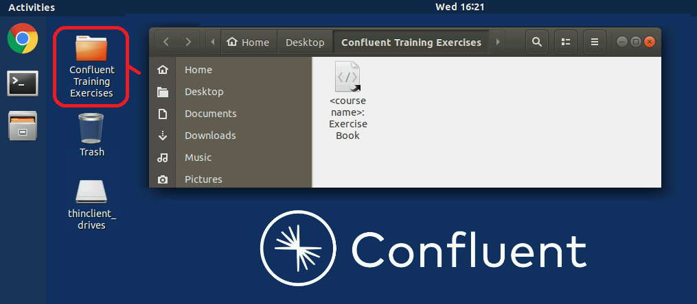
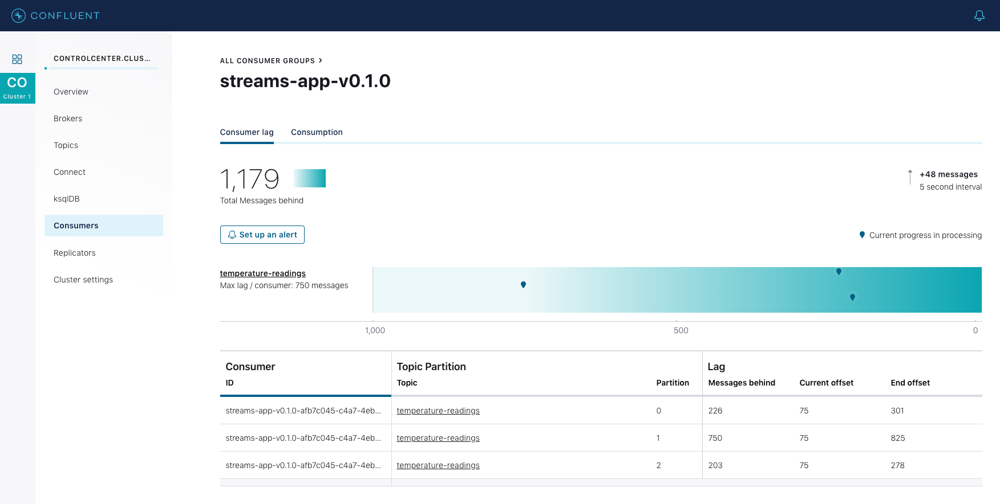
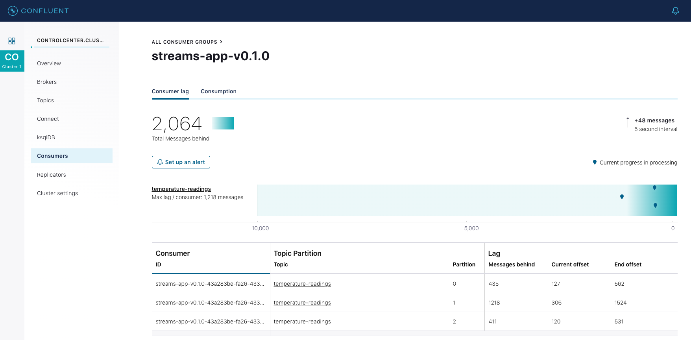
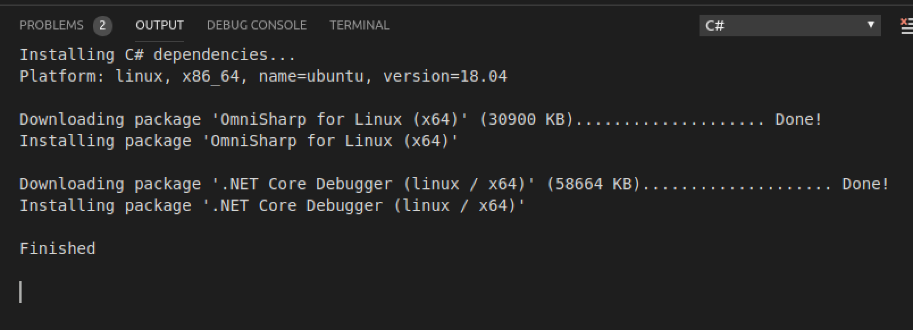
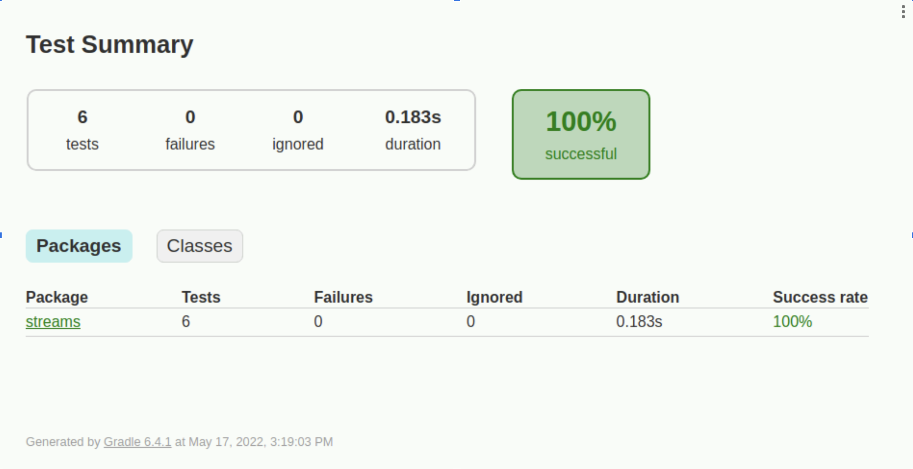
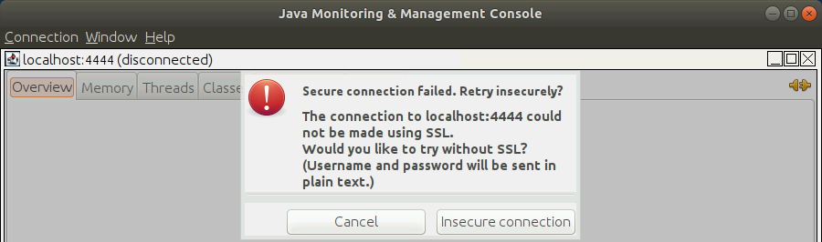
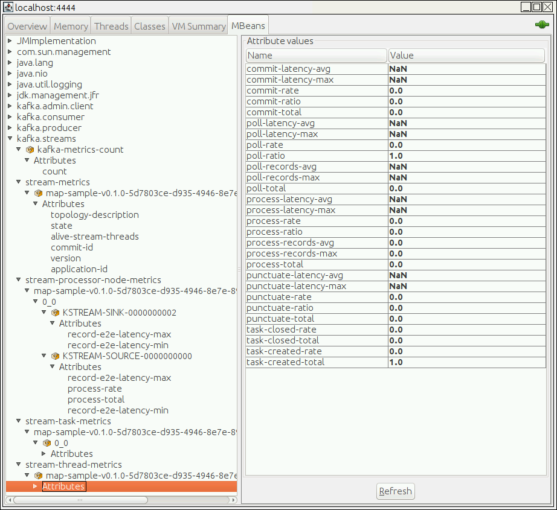
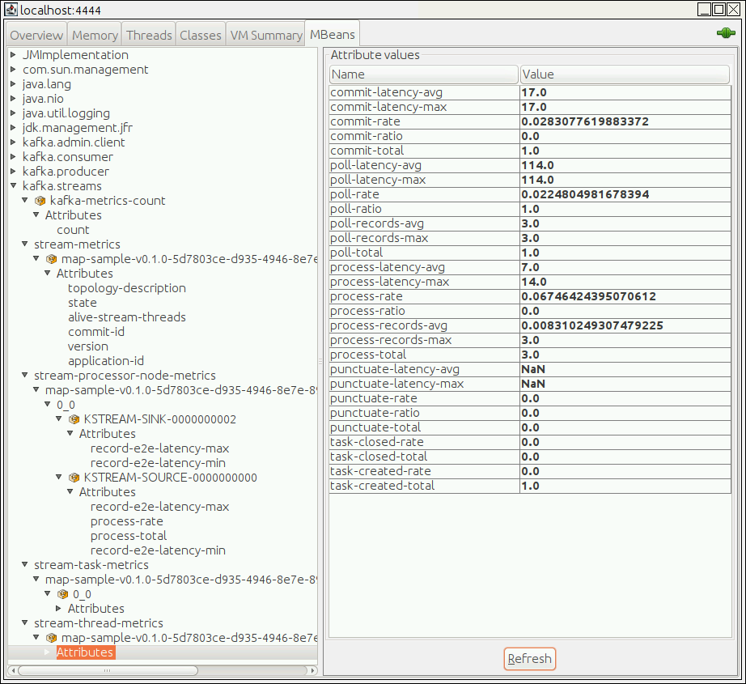
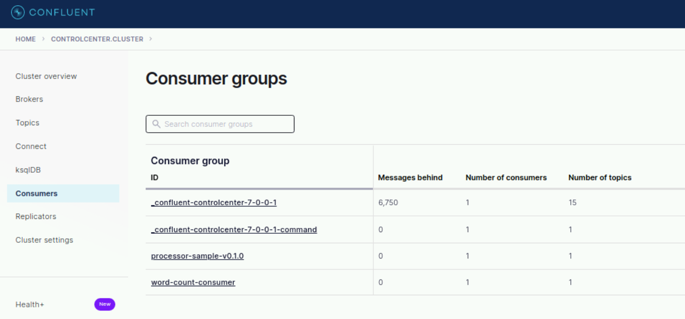
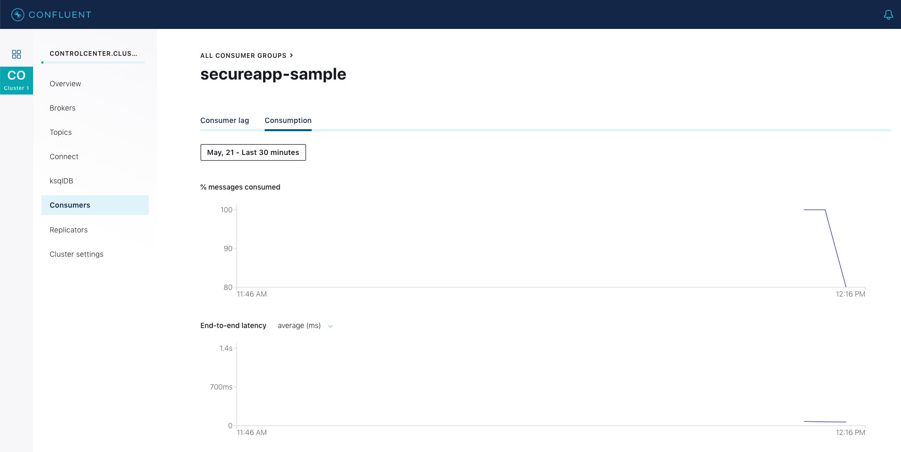

Copyright & Trademarks
Copyright © Confluent, Inc. 2014-2022. Privacy Policy | Terms & Conditions.
Apache, Apache Kafka, Kafka and the Kafka logo are trademarks of the
Apache Software Foundation
Lab 00 Introduction
a. Introduction
This document provides Hands-On Exercises for the course Confluent Stream Processing using Apache Kafka® Streams & ksqlDB. You will use a setup that includes a virtual machine (VM) configured with Apache Kafka and Confluent tools to manage your data and clusters.
Alternative Lab Environment
As an alternative you can:
-
Download the VM to your laptop and run it in VirtualBox. Make sure you have the newest version of VirtualBox installed. Download the VM from this link:
-
If you have installed Docker for Desktop on your Mac or Windows 10 Pro machine then you can run the labs there. But please note that your trainer might not be able to troubleshoot any potential problems if you are running the labs locally. If you choose to do this, follow the instructions at → Running Labs in Docker for Desktop.
Command Line Examples
Most exercises contain commands that must be run from the command line. These commands will look like this:
$ pwd /home/training
Commands you should type are shown in bold; non-bold text is an example of the output produced as a result of the command.
Preparing the Labs
Welcome to your lab environment! You are connected as user training, password training.
|
If you haven’t already done so, you should open the Exercise Guide that is located on the lab virtual machine. To do so, open the Confluent Training Exercises folder that is located on the lab virtual machine desktop. Then double-click the shortcut that is in the folder to open the Exercise Guide.

Copy and paste works best if you copy from the Exercise Guide on your lab virtual machine.
If you find these keyboard shortcuts are not working you can use the right-click context menu for copy and paste. |
-
Open a terminal window
-
Clone the source code repository to the folder
confluent-streamsin your home directory:$ cd ~ $ git clone --depth 1 --branch 7.0.0-v1.0.1 \ https://github.com/confluentinc/training-ksql-and-streams-src.git \ confluent-streamsIf you chose to select another folder for the labs then note that many of our samples assume that the lab folder is ~/confluent-streams. You will have to adjust all those command to fit your specific environment. -
Navigate to the
confluent-streamsfolder:$ cd ~/confluent-streams
-
Start the Kafka cluster:
$ docker-compose up -d zookeeper kafka
You should see something similar to this:
Creating network "confluent-streams_kafka-net" with the default driver Creating kafka ... done Creating zookeeper ... done
In the first steps of each exercise, you may launch the containers needed for the exercise with a
docker-compose upcommand. Simply typingdocker-compose up -dwill start all of the containers defined in the docker-compose.yml file. You can start fewer containers by specifying only those you want to run, for example:docker-compose up -d zookeeper kafka.The majority of the exercises use the docker-compose.yml file in the ~/confluent-streams directory. The
docker-compose upcommand will search up the directory hierarchy until it finds a docker-compose.yml file, so the one in the confluent-streams directory will usually be used. The exception is the docker-compose.yml file used in the security exercise as this has additional security settings. See the comments at the beginning of Lab 11 Securing a Kafka Streams Application.If at any time you want to get your environment back to a clean state use
docker-compose downto end all of your containers. Then return to your lastdocker-compose upto get back to the beginning of an exercise.Exercises do not need to be completed in order. You can start from the beginning of any exercise at any time.
If you want to completely clear out your docker environment use the script on the VM:
docker-nuke.sh. The nuke script will forcefully end all of your running docker containers. -
Monitor the cluster with:
$ docker-compose ps Name Command State Ports ---------------------------------------------------------------------------- kafka /etc/confluent/docker/run Up 0.0.0.0:9092->9092/tcp zookeeper /etc/confluent/docker/run Up 2181/tcp, 2888/tcp, 3888/tcp
All services should have
Stateequal toUp. -
You can also observe the stats of Docker on your VM:
$ docker stats CONTAINER ID NAME CPU % MEM USAGE / LIMIT MEM % NET I/O BLOCK I/O PIDS ab9c97077e94 zookeeper 0.14% 88.14MiB / 9.737GiB 0.88% 106kB / 130kB 0B / 0B 48 ff47bece9e4f kafka 1.17% 421.8MiB / 9.737GiB 4.23% 646kB / 522kB 0B / 0B 77
Cleanup
-
Press
Ctrl+Cto exit the Docker statistics. -
Shut down your Kafka cluster with the
docker-compose down -vcommand.
b. Continued Learning After Class
Once the course ends, the VM in Content Raven will terminate and you will no longer have access to it. However, you can still download the VM onto your own machine or use Docker locally to revisit these materials. We encourage you to bring up your own test environment, explore configuration files, inspect scripts, and perform tests. Here are some activities we encourage to reinforce your learning:
-
Revisit the exercises in this manual
-
Summarize and discuss the student handbook with your peers
-
Consult the README in this public repository for more resources and your own development playground: https://github.com/confluentinc/training-ksql-and-streams-src
Conclusion
In this lab you have prepared and tested the Lab Environment. Finally you have created your Apache Kafka cluster that will be used in subsequent exercises.
STOP HERE. THIS IS THE END OF THE EXERCISE.
Lab 01 Introduction to Kafka Streams
a. Scaling a Kafka Streams Application
In this exercise, we’re going to write a Kafka producer in either Python or Java that generates a stream of temperature readings for a set of weather stations. We are also writing a simple Kafka Streams application that will consume this topic and calculate the maximum temperature per station per time window. We will then run this application in a single instance and later scale it up to several instances. We will monitor the throughput with the Confluent Control Center.
Prerequisites
Please make sure you have prepared your lab environment as described here: → Lab Environment
Running the Kafka Cluster and Confluent Control Center
To be able to run Kafka Streams applications we need a working Kafka cluster. We will run one consisting of a single broker and zookeeper.
-
Locate the file
docker-compose.ymlin the~/confluent-streamsdirectory.This docker-compose.ymlfile will be used to run a simple Kafka cluster as a backend for our Kafka Streams applications. If you’re curious, please open the file and analyze its contents. -
Navigate to the folder
labs/scaling:$ cd ~/confluent-streams/labs/scaling
-
Run the Kafka cluster:
$ docker-compose up -d zookeeper kafka ksqldb-server control-center
Wait a couple of minutes until the cluster is initialized.
-
Create the two topics
temperature-readingsandmax-temperatures, each with 3 partitions using these commands:$ kafka-topics \ --create \ --bootstrap-server kafka:9092 \ --replication-factor 1 \ --partitions 3 \ --topic temperature-readings $ kafka-topics \ --create \ --bootstrap-server kafka:9092 \ --replication-factor 1 \ --partitions 3 \ --topic max-temperatures
Creating the Producer
Now it is time to create a temperature readings producer. You can do it either in Python or Java. We start with the Python producer. If you prefer Java then move ahead to →here.
Create the Producer in Python
-
Navigate to the folder
labs/scaling, and launch VS Code:$ cd ~/confluent-streams/labs/scaling/temp-producer $ code .
If a pop-up appears when VS Code opens, check the box and click Yes, I trust the authors. -
Locate the file
main.py. -
Inspect the code.
-
We are defining a few (temperature measurement) stations, their respective average temperatures and last measured temperatures
-
we’re using the Confluent Python client for Kafka to create a producer
-
every ~100 ms we’re generating a temperature reading for one of the randomly selected station.
-
-
Return to the terminal window, and install the python prerequisite. Note this may already be installed from a previous exercise:
$ pip3 install --upgrade pip $ pip3 install confluent-kafka
-
Run the producer:
$ python3 main.py
-
In another terminal window run the
kafka-console-consumerto display thetemperature-readingstopic:$ kafka-console-consumer \ --bootstrap-server kafka:9092 \ --from-beginning \ --max-messages 25 \ --topic temperature-readings \ --property print.key=true \ --property key.separator=", "You should see an output similar to this:
S-06, {"station": "S-06", "temperature": -1} S-03, {"station": "S-03", "temperature": 8} S-03, {"station": "S-03", "temperature": 9} S-06, {"station": "S-06", "temperature": 0} S-08, {"station": "S-08", "temperature": 31} S-09, {"station": "S-09", "temperature": -7} ...The
keyis the station and thevalueis a JSON object with the station and the temperature in degree Celsius.
Create the Producer in Java
-
Navigate to the folder
labs/scaling, and launch VS Code:$ cd ~/confluent-streams/labs/scaling/temp-producer $ code .
-
Locate the file
build.gradleand analyze its content. It is the build file for a simple Kafka client. -
Locate the file
TempProducer.javain the subfoldersrc/main/java/streamsand open it. Analyze the file and make sure you understand the code. If necessary discuss with your peers. -
Notice the file
log4j.propertiesin the foldersrc/main/resourcesthat configures logging for the producer. -
Use Run → Start Debugging in VS Code or
./gradlew runin the terminal to run the Java producer.The first time you run the debugger it may take extra time while resources are downloaded. You should see an output similar to this:
The record is: S-06, {"station": "S-06", "temperature": -1} The record is: S-03, {"station": "S-03", "temperature": 8} The record is: S-03, {"station": "S-03", "temperature": 9} The record is: S-06, {"station": "S-06", "temperature": 0} The record is: S-08, {"station": "S-08", "temperature": 31} The record is: S-09, {"station": "S-09", "temperature": -7} ...The
keyis the station and thevalueis a JSON object with the station and temperature in degree Celsius. -
From another terminal window, run the
kafka-console-consumerto display thetemperature-readingstopic:$ kafka-console-consumer \ --bootstrap-server kafka:9092 \ --from-beginning \ --max-messages 25 \ --topic temperature-readings \ --property print.key=true \ --property key.separator=", "You should see an output similar to this:
S-06, {"station": "S-06", "temperature": -1} S-03, {"station": "S-03", "temperature": 8} S-03, {"station": "S-03", "temperature": 9} S-06, {"station": "S-06", "temperature": 0} S-08, {"station": "S-08", "temperature": 31} S-09, {"station": "S-09", "temperature": -7} ... -
Jump to the next section "Writing the Kafka Streams Application".
Writing the Kafka Streams Application
-
Open a terminal window and navigate to the
streams-appfolder:$ cd ~/confluent-streams/labs/scaling/streams-app
-
In the folder
confluent-streams/labs/scaling/streams-applocate the filebuild.gradleand analyze its content.In addition to the usual libraries we also load the monitoring-interceptorslibrary to be able to integrate with the Confluent Control Center and thekafka-json-serializerlibrary for the JSON serde. -
We will be using the Kafka Streams application called
StreamsApp.javain the subfoldersrc/main/java/streamsfor this exercise. -
You may choose to launch VS Code with
code .to build and run the application. Or simply use gradle with./gradlew run. -
Run an instance of
kafka-console-consumerto display themax-temperaturestopic. Note it may take some time for max temperatures to appear:$ kafka-console-consumer \ --bootstrap-server kafka:9092 \ --from-beginning \ --topic max-temperaturesIs the output surprising to you? Why? It is because of the nature of the
commit.interval.msproperty and how it relates to the output of KTables to Kafka topics. This will be discussed later in the course.Ignore the warnings:
2022-05-11 21:45:52 WARN ConsumerConfig:362 - The configuration 'admin.retry.backoff.ms' was supplied but isn’t a known config. 2022-05-11 21:45:52 WARN ConsumerConfig:362 - The configuration 'admin.retries' was supplied but isn’t a known config. -
Open Confluent Control Center at http://localhost:9021
-
In Control Center, click on
CONTROLCENTER.CLUSTERand then under Consumers, monitor the consumer lag for thestreams-app-v.0.1.0. Note that the consumer group falls more and more behind: -
Alternatively, you can use the Kafka tool
kafka-consumer-groupsto check the consumer lag:$ kafka-consumer-groups --bootstrap-server kafka:9092 --group streams-app-v0.1.0 --describe GROUP TOPIC PARTITION CURRENT-OFFSET LOG-END-OFFSET LAG CONSUMER-ID... streams-app-v0.1.0 temperature-readings 0 551 2417 1866 streams-app... streams-app-v0.1.0 temperature-readings 1 363 5395 5032 streams-app... streams-app-v0.1.0 temperature-readings 2 580 3614 3034 streams-app...
Scaling the Kafka Streams Application
-
Open another terminal window to run another instance of your Kafka Streams application:
$ cd ~/confluent-streams/labs/scaling/streams-app $ ./gradlew run
-
In Confluent Control Center observe how the throughput of the streams app nearly doubles.
-
Note that we have now two consumer instances listed (recognizable by their ID):
 -
Also observe that the consumer lag increases more slowly…
-
Now scale the streams app to 3 instances and again monitor an increase in throughput and reduction in consumer lag.
-
Finally scale the app again, this time to 4 instances. Monitor the throughput after scaling the app. What are you observing? Explain your observation. See the conclusion for an explanation of what happens here.
Optional: Using the ksqlDB CLI
We can achieve the same results using ksqlDB!
-
Use the ksqlDB CLI to play with the data:
$ ksql http://ksqldb-server:8088
-
Set the starting point of your queries to
earliest:ksql> SET 'auto.offset.reset' = 'earliest';
-
Create a stream for the source topic:
ksql> CREATE STREAM temperatures(station STRING, temperature INTEGER) WITH(KAFKA_TOPIC='temperature-readings', VALUE_FORMAT='JSON'); -
Create a table that shows the maximum, minimum, and average temperatures per station per minute:
ksql> CREATE TABLE temp_agg_per_min AS SELECT station, max(temperature) AS max, min(temperature) AS min, sum(temperature) / count( * ) AS avg FROM temperatures WINDOW TUMBLING (SIZE 1 MINUTE) GROUP BY station; -
Inspect the aggregated temperature data as new records flow in from the producer.
ksql> SELECT station, max, min, avg FROM temp_agg_per_min EMIT CHANGES;
Press
CTL-Cto terminate the query. -
Exit ksqlDB with
Ctrl+D.
Cleanup
-
Stop the producer, consumers, and stream application with
Ctrl+Cin the terminal or Run → Stop Debugging in VScode. -
Shut down your Kafka cluster with the
docker-compose down -vcommand.
Conclusion
In this exercise we have created a Kafka Streams application that processed an input topic and produced an output topic. First we ran only one application instance and then we scaled the application up to several instances. We noticed a significant boost in throughput until the number of instances was greater than the number of partitions of the input topic. At this point the additional application instances were sitting there idle.
In the solutions folder, the Java producer and Kafka Streams app include Dockerfiles so that they can be deployed as containers. A separate docker-compose.services.yml has also been provided to start the microservices.
|
STOP HERE. THIS IS THE END OF THE EXERCISE.
Lab 02 Working with Kafka Streams
This lab contains 2 exercises:
-
Anatomy of a Kafka Streams App
-
Working with JSON
a. Anatomy of a Kafka Streams App
In this exercise, you will create a Kafka Streams application and deploy it using Gradle (or, optionally, Maven). The purpose of this exercise is to illustrate the structure of Kafka Streams application code and the routine of deploying code with build tools.
The application itself reads data from a topic whose keys are integers and whose values are sentence strings. The application transforms the input so that the strings are lower-case and output to a new topic.
Prerequisites
Please make sure you have prepared your lab environment as described here: → Lab Environment
Preparing the Kafka Cluster
-
Navigate to the folder
~/confluent-streams/labs/working-streams:$ cd ~/confluent-streams/labs/working-streams
-
From within the
working-streamsfolder run the cluster with the following command:$ docker-compose up -d zookeeper kafka Creating network "confluent-streams_kafka-net" with the default driver Creating kafka ... done Creating zookeeper ... done
-
Double check that the cluster is up and running:
$ docker-compose ps
you should see something similar to this:
Name Command State Ports ----------------------------------------------------------------------------------------- kafka /etc/confluent/docker/run Up 0.0.0.0:9092->9092/tcp zookeeper /etc/confluent/docker/run Up 2181/tcp, 2888/tcp, 3888/tcp
Make sure all services have
State=Up. -
Create an input topic called
lines-topicin Kafka:$ kafka-topics \ --create \ --bootstrap-server kafka:9092 \ --replication-factor 1 \ --partitions 1 \ --topic lines-topic -
Create an output topic called
lines-lower-topicin Kafka:$ kafka-topics \ --create \ --bootstrap-server kafka:9092 \ --replication-factor 1 \ --partitions 1 \ --topic lines-lower-topic Created topic "lines-lower-topic". -
Let’s now check what topics are in Kafka using this command:
$ kafka-topics \ --bootstrap-server kafka:9092 \ --listWe should see something like this:
__confluent.support.metrics lines-lower-topic lines-topic
If you need to delete a topic, say the one with name <topic name>, (e.g. to start over) you can use this command:
|
$ kafka-topics \
--bootstrap-server kafka:9092 \
--delete \
--topic <topic name>
Now we are ready to create, build and run our first Kafka Streams application. We will first build and run the application using Java in conjunction with Gradle. Optionally, we will also see how to build and run the application with Maven.
Authoring the Kafka Streams Application using Java & Gradle
-
Navigate to the folder
gradle-samplewith in theworking-streamsfolder, and launch VS Code:Be certain to include the period in the code .command below. That indicates starting VS Code in the current directory - otherwise some references may not correctly resolve.$ cd ~/confluent-streams/labs/working-streams/gradle-sample $ code .
-
In this folder locate the
build.gradlefile and open it to analyze its content.The external dependencies for a simple Kafka Streams app are the kafka-clientsandkafka-streamslibraries. We also add theslf4j-log4j12dependency for logging purposes. -
In VS Code, open the file
MapSample.javain the subfoldersrc/main/java/streamsand inspect its content. From here, you can challenge yourself to complete the TODOs, or you can move forward to see a step-by-step walkthrough of the code. If you decide to challenge yourself, you can always peek at the corresponding subfolder in~/confluent-streams/solutions/if you get stuck. -
Now we start to add actual Kafka Streams application logic. We will start with the configuration part. Please add this code snippet to the
mainmethod of the class (right after the initialprintln):Properties settings = new Properties(); settings.put(StreamsConfig.APPLICATION_ID_CONFIG, "map-sample-v0.1.0"); settings.put(StreamsConfig.BOOTSTRAP_SERVERS_CONFIG, "kafka:9092");We’re providing an ID to our application and tell it where to find the Kafka cluster. This is the minimal configuration needed!
-
Next we will define the topology of our Kafka Streams application. Add this snippet right after the configuration part:
final Serde<String> stringSerde = Serdes.String(); StreamsBuilder builder = new StreamsBuilder(); KStream<String, String> lines = builder .stream("lines-topic", Consumed.with(stringSerde, stringSerde)); KStream<String, String> transformed = lines .mapValues(value -> value.toLowerCase()); transformed.to("lines-lower-topic", Produced.with(stringSerde, stringSerde)); Topology topology = builder.build();
We’re defining a builder for the topology, use it to create aKStreamfrom the Kafka topicline-topicusingStringSerdes for both key and value of the messages. Then we’re using amapValuesfunction on theKStreamto convert thevalueinto all lower case. Finally we’re writing the result into the Kafka topicline-lower-topic. Then we build the topology. -
With the settings and the topology at hand we can now create the Streams app:
KafkaStreams streams = new KafkaStreams(topology, settings);Our application will now start consuming data from the input topic, transform it and write it to the output topic.
-
To have our application terminate in an orderly way when requested without leaving any resource leaks behind we add a shutdown hook at the end of the main method:
final CountDownLatch latch = new CountDownLatch(1); Runtime.getRuntime().addShutdownHook(new Thread(() -> { System.out.println("### Stopping Map Sample Application ###"); streams.close(); latch.countDown(); })); try{ streams.start(); latch.await(); } catch (final Throwable e) { System.exit(1); } System.exit(0);This Shutdown Hook will be executed when the application receives a
SIG_TERMsignal. TheCountDownLatchis used as a best practice to avoid rare cases of deadlock. Notice the use of theawait()method after the application starts. -
Within the project folder
gradle-samplelocate the folder for the Java resourcessrc/main/resources. In this folder we have a filelog4j.properties. This file is used to configure the logger for our Kafka Streams app.Use INFOinstead ofWARNfor therootLoggerif you want to be more verbose in the logs.And that’s all we need. Our first Kafka Streams app is ready to go! Use Run → Start Debugging to run your code.
In the VS Code DEBUG CONSOLE tab you should see something like this:
*** Starting Map Sample Application *** 2018-07-04 13:47:36 WARN ConsumerConfig:287 - The configuration 'admin.retries' was supplied but isn't a known config.At this time you can safely ignore the WARN log items.
At this time nothing will happen since we did not yet produce any data in the lines-topicin Kafka. Let your Kafka Streams app remain running in the VS Code debugger. This will be our next task after we have shown how to build the same app using Maven instead of Gradle.
If you want to skip the Maven part then go to Producing some Input Data.
Optional: Build and Run the application with Java & Maven
Here we’re basically showing the same steps as in the previous section, except we will now use Maven instead of Gradle.
-
Navigate to the
maven-samplefolder, and launch VS Code:$ cd ~/confluent-streams/labs/working-streams/maven-sample $ code .
-
Locate the
pom.xmlfile, open it and analyze its content.this is the minimum Maven file required to compile, package and run a Java application that has external dependencies on the 2 required libraries kafka-clientsandkafka-streams. It also uses theslf4j-log4j12library for logging. -
Locate the file
MapSample.javain the subfoldersrc/main/java/streamsand open it. Double check that it looks similar to the one you created in the Gradle example. -
Note the same file
log4j.propertiesin the foldersrc/main/resourcesas in the Gradle example.Use INFOinstead ofWARNfor therootLoggerif you want to be more verbose in the logs. -
Solution code has been provided in this exercise, so our first Kafka Streams app is ready to go! Use Run → Start Debugging to run your code.
You should see something like this:
*** Starting Map Sample Application *** 2018-07-04 13:53:12 WARN ConsumerConfig:287 - The configuration 'admin.retries' was supplied but isn't a known config.At this time you can safely ignore the WARN log items.
At this time nothing will happen since we did not yet produce any data in the lines-topic in Kafka. Let’s do this next. Let your Kafka Streams app remain running in the VS Code debugger.
|
Producing some Input Data
We’re going to use the kafka-console-producer tool to create some input data in the topic lines-topic.
-
Open a new terminal window and navigate to the
working-streamsfolder:$ cd ~/confluent-streams/labs/working-streams
-
From a terminal window execute this command:
$ cat << EOF | kafka-console-producer \ --bootstrap-server kafka:9092 \ --property "parse.key=true" \ --property "key.separator=:" \ --topic lines-topic 1:"Kafka powers the Confluent Streaming Platform" 2:"Events are stored in Kafka" 3:"Confluent contributes to Kafka" EOFThis writes 3 entries into the topic called
lines-topicusingStringserializers for both key and value.
Reading the Transformed Messages
Here we’re using the kafka-console-consumer tool to read from the output topic. We’re again using String deserializers for key and value.
-
In the same terminal window, run:
$ kafka-console-consumer \ --bootstrap-server kafka:9092 \ --from-beginning \ --topic lines-lower-topicYou should see this:
"kafka powers the confluent streaming platform" "events are stored in kafka" "confluent contributes to kafka"You might need to be a bit patient until the messages appear. It can take a few seconds to a minute or so depending on the performance of your computer…
Cleanup
-
Terminate the Kafka console consumer by pressing
Ctrl+C. -
Terminate your Kafka Streams application with Run → Stop Debugging. If you used the
./gradlew runcommand instead, you can terminate withCtrl+C. -
Shut down your Kafka cluster with the
docker-compose down -vcommand.
Conclusion
We have created our first complete Kafka Streams application. We built the application using Gradle, and then again with Maven. We have used the command line tools provided by Kafka to produce input data and display the transformed output data.
STOP HERE. THIS IS THE END OF THE EXERCISE.
b. Working with JSON
The purpose of this exercise is to learn how to create serializers and deserializers for custom Java objects.
In this case, we will create a Serde for an object that records temperature data using the KafkaJsonSerializer and KafkaJsonDeserializer helper classes. The application itself reads temperature data from an input topic, filters for temperatures higher than 25 degrees, and outputs that data to a new output topic.
Prerequisites
-
Navigate to this lab’s folder
~/confluent-streams/labs/working-streams:$ cd ~/confluent-streams/labs/working-streams
-
If it is not already running, start the Kafka cluster:
$ docker-compose up -d zookeeper kafka
Do not proceed until all services are up and running; test with:
$ docker-compose ps
and assert that all services are in state
Up. -
Create an input topic called
temperatures-topicand an output topic calledhigh-temperatures-topicin Kafka:$ kafka-topics \ --create \ --bootstrap-server kafka:9092 \ --replication-factor 1 \ --partitions 1 \ --topic temperatures-topic $ kafka-topics \ --create \ --bootstrap-server kafka:9092 \ --replication-factor 1 \ --partitions 1 \ --topic high-temperatures-topic
Writing the Kafka Streams App
-
Open a new terminal window and navigate to the
working-streams/json-samplefolder, and launch VS Code:$ cd ~/confluent-streams/labs/working-streams/json-sample $ code .
-
Locate the file
build.gradlein this folder and open it to analyze its content.Compared to the build.gradlefile in the previous exercise we have added thekafka-json-serializerlibrary for the JSON serializer/deserializer -
In the subfolder
src/main/java/streamslocate the fileJsonSample.javaand familiarize yourself with the code. It basically does the configuration of the Kafka Streams app but the interesting code is missing. As before, you can challenge yourself to implement the missing code or follow the step-by-step instructions in this book. -
To create a Serde (Serializer/Deserializer) for JSON formatted data, add this code to the function
getJsonSerde()after the TODO comment:Map<String, Object> serdeProps = new HashMap<>(); serdeProps.put("json.value.type", TempReading.class); final Serializer<TempReading> temperatureSerializer = new KafkaJsonSerializer<>(); temperatureSerializer.configure(serdeProps, false); final Deserializer<TempReading> temperatureDeserializer = new KafkaJsonDeserializer<>(); temperatureDeserializer.configure(serdeProps, false); return Serdes.serdeFrom(temperatureSerializer, temperatureDeserializer);We’re basically using the two helper classes
KafkaJsonSerializerandKafkaJsonDeserializerto create a serializer and a deserializer which in turn we then use to create a Serde.
We will use this Serde to serialize and deserialize ourTempReadingPOJO. -
The final thing to do is to define the Topology for our application. We want to keep it simple and just filter the input topic
temperatures-topicfor high temperatures (>25 degrees) and output the result to the output topichigh-temperatures-topic. Add this code to thegetTopology()function after the TODO comment:builder.stream("temperatures-topic", Consumed.with(stringSerde, temperatureSerde)) .filter((key,value) -> value.temperature > 25) .to("high-temperatures-topic", Produced.with(stringSerde, temperatureSerde)); return builder.build();Note how the filter function uses the valuewhich is an object of typeTempReading. -
Note the file
log4j.propertiesin the foldersrc/main/resourceswhich is used to configure logging for our application. -
Use Run → Start Debugging to run your code. Let your Kafka Streams app remain running in the VS Code debugger.
You should get this output:
*** Starting JSON Sample Application *** ...
Creating input Data
-
Switch back to the terminal.
-
Use the following command to generate some temperature readings in JSON format:
$ cat << EOF | kafka-console-producer \ --bootstrap-server kafka:9092 \ --property "parse.key=true" \ --property "key.separator=:" \ --topic temperatures-topic "S1":{"station":"S1", "temperature": 10.2, "timestamp": 1} "S1":{"station":"S1", "temperature": 11.2, "timestamp": 2} "S1":{"station":"S1", "temperature": 11.1, "timestamp": 3} "S1":{"station":"S1", "temperature": 12.5, "timestamp": 4} "S2":{"station":"S2", "temperature": 15.2, "timestamp": 1} "S2":{"station":"S2", "temperature": 21.7, "timestamp": 2} "S2":{"station":"S2", "temperature": 25.1, "timestamp": 3} "S2":{"station":"S2", "temperature": 27.8, "timestamp": 4} EOFRun this command repeatedly to generate more messages…
Reading the Output
-
Use the following command to read the output generated:
$ kafka-console-consumer \ --bootstrap-server kafka:9092 \ --from-beginning \ --topic high-temperatures-topicYou should get this output showing only readings with temperature higher than 25 degrees:
{"station":"S2","temperature":25.1,"timestamp":3} {"station":"S2","temperature":27.8,"timestamp":4}
Cleanup
-
Terminate the Kafka console consumer by pressing
Ctrl+C. -
Terminate your Kafka Streams application with Run → Stop Debugging.
-
Shut down your Kafka cluster with the
docker-compose down -vcommand.
Conclusion
In this sample we have built a Kafka Streams application that uses custom serializer and deserializer to work with data that is JSON formatted.
STOP HERE. THIS IS THE END OF THE EXERCISE.
Lab 03 Introduction to ksqlDB
a. Introduction to ksqlDB
In this lab exercise, you will use the ksqlDB CLI to slice and dice data that is being generated in real time. The purpose is to get a sense for the streaming applications that are possible using only a SQL-like syntax. We will query running streams, apply filters and maps, and create new streams and tables derived from existing streams.
For more details on running ksqlDB in Docker containers, please see Install ksqlDB with Docker.
Prerequisites
Please make sure you have prepared your lab environment as described here: → Lab Environment
Preparing the Platform
-
Open a terminal window and navigate to the folder
~/confluent-streams:$ cd ~/confluent-streams
-
This exercise will use the docker-compose.yml file in ~/confluent-streams, but this time we need to also run the ksqldb-server container.
Optional: Open the file in your editor and analyze its content. You do not necessarily need to understand all of it at this point.
-
Run the application with:
$ docker-compose up -d zookeeper kafka ksqldb-server
-
Wait until the app is up and running, that is all services are marked as
up:$ docker-compose ps
you should see something like this:
Name Command State Ports
--------------------------------------------------------------------------------
kafka /etc/confluent/docker/run Up 0.0.0.0:9092->9092/tcp
ksqldb-server /etc/confluent/docker/run Up 0.0.0.0:8088->8088/tcp
zookeeper /etc/confluent/docker/run Up 2181/tcp, 2888/tcp, 3888/tcp-
You can see that we have 3 containers running on our system:
-
the first in the list is running a Kafka broker
-
the second container runs an instance of ksqlDB Server
-
and the last one runs an instance of Zookeeper
All these containers run on a software defined network (SDN) called
confluent-streams_kafka-net.
-
Running the ksqlDB CLI
We want now to use the ksqlDB CLI and connect it with our ksqlDB server.
-
Start the ksqlDB CLI
$ ksql http://ksqldb-server:8088
You will be greeted by the following screen:
OpenJDK 64-Bit Server VM warning: Option UseConcMarkSweepGC was deprecated in version 9.0 and will likely be removed in a future release. =========================================== = _ _ ____ ____ = = | | _____ __ _| | _ \| __ ) = = | |/ / __|/ _` | | | | | _ \ = = | <\__ \ (_| | | |_| | |_) | = = |_|\_\___/\__, |_|____/|____/ = = |_| = = Event Streaming Database purpose-built = = for stream processing apps = =========================================== Copyright 2017-2021 Confluent Inc. CLI v7.0.0, Server v7.0.0 located at http://localhost:8088 Server Status: RUNNING Having trouble? Type 'help' (case-insensitive) for a rundown of how things work! ksql>
Working with ksqlDB CLI
Here we’re going to experiment with various features of ksqlDB. We use the two topics pageviews and users.
First we will use the ksql-datagen tool to create data for us. This tool has a number of predefined data types - you see us requesting them here with the parameter quickstart=users and quickstart=pageviews in the commands below.
For more info on this tool, see: https://docs.ksqldb.io/en/latest/developer-guide/test-and-debug/generate-custom-test-data/.
-
First, create the two topics
usersandpageviews. Run:$ kafka-topics --bootstrap-server kafka:9092 --create --partitions 1 --replication-factor 1 --topic users $ kafka-topics --bootstrap-server kafka:9092 --create --partitions 1 --replication-factor 1 --topic pageviews
-
Open two more terminals and run each of the ksql-datagen commands in one of them.
$ ksql-datagen quickstart=users format=json topic=users \ bootstrap-server=kafka:9092 $ ksql-datagen quickstart=pageviews format=delimited \ topic=pageviews bootstrap-server=kafka:9092 -
Now, return to the ksqlDB CLI. To be able to work with data from Kafka we need to create either a Stream or a Table in ksqlDB. Let’s create a stream from the topic
pageviewsusing KSQL:ksql> CREATE STREAM pageviews_original ( viewtime bigint, userid varchar, pageid varchar ) WITH (kafka_topic='pageviews', value_format='DELIMITED');This command creates a Stream called
pageviews_originalfrom the Kafka topicpageviews, whose record values are encoded in CSV (here calledDELIMITED). The three values in each record value are interpreted as fieldsviewtime,useridandpageid.The ksqlDB editor should answer with
Message ---------------- Stream created ----------------
-
We can now describe the stream:
ksql> DESCRIBE pageviews_original;
giving us this output:
Name : PAGEVIEWS_ORIGINAL Field | Type ---------------------------- VIEWTIME | BIGINT USERID | VARCHAR(STRING) PAGEID | VARCHAR(STRING) ---------------------------- For runtime statistics and query details run: DESCRIBE EXTENDED <Stream,Table>;
-
Let’s create a table from the
userstopic:ksql> CREATE TABLE users_original ( registertime BIGINT, gender VARCHAR, regionid VARCHAR, userid VARCHAR PRIMARY KEY ) WITH (kafka_topic='users', value_format='JSON');This command creates a Table from the Kafka topic
users, whose records have values encoded inJSON. Since this is a table, we need a key by which the records from the source topic are grouped. In our case this is the fielduserid. The four fieldsregistertime,gender,regionid, anduseridshould be part of theJSONvalue of the records in the topic. -
Use
DESCRIBE users_original;to get a description of the table.ksql> DESCRIBE users_original;
giving us this output:
Name : USERS_ORIGINAL Field | Type ----------------------------------------------- REGISTERTIME | BIGINT GENDER | VARCHAR(STRING) REGIONID | VARCHAR(STRING) USERID | VARCHAR(STRING) (primary key) ----------------------------------------------- For runtime statistics and query details run: DESCRIBE EXTENDED <Stream,Table>;
-
Now use
SHOW STREAMS;andSHOW TABLES;to view the list of streams and tables defined in the system.ksql> SHOW STREAMS; ksql> SHOW TABLES;
| All ksqlDB commands need to be terminated with a semi-colon (;). ksqlDB SQL keywords such as CREATE or DESCRIBE are not case sensitive. |
Querying Streams and Tables
-
Let’s get some data from the
pageviews_originalstream:The default for where to start when selecting data is latest. If data is not being continuously loaded into your stream, this may result in your SELECT not displaying any data for some time. Set the default to be earliest in your ksqlDB CLI session with the set command: set 'auto.offset.reset'='earliest'; ksql> SELECT * FROM pageviews_original EMIT CHANGES LIMIT 10;
Please note the
LIMITclause which limits the output to 10 records. The output should look similar to this:+--------------------+--------------------+--------------------+ |VIEWTIME |USERID |PAGEID | +--------------------+--------------------+--------------------+ |1603202197108 |User_5 |Page_22 | |1603202197145 |User_6 |Page_55 | |1603202197145 |User_1 |Page_82 | |1603202197145 |User_4 |Page_86 | |1603202197145 |User_2 |Page_58 | |1603202197145 |User_8 |Page_97 | |1603202197145 |User_6 |Page_88 | |1603202197145 |User_4 |Page_21 | |1603202197145 |User_5 |Page_65 | |1603202197145 |User_5 |Page_34 | Limit Reached Query terminated
If your data is displayed in columns that are too wide, you can change the column width in your ksqlDB CLI session using the set command. For example: SET CLI COLUMN-WIDTH 15; -
Let’s run the same query but this time without the
LIMITclause:ksql> SELECT * FROM pageviews_original EMIT CHANGES;
you will notice that the query does not stop and continues indefinitely. This is of course expected since a stream never ends.
Hit
Ctrl+Cto end the query. -
Now try the same with the table:
ksql> SELECT * FROM users_original EMIT CHANGES LIMIT 5;
giving us this output:
+--------------------+--------------------+--------------------+--------------------+ |USERID |REGISTERTIME |GENDER |REGIONID | +--------------------+--------------------+--------------------+--------------------+ |User_2 |1512186975750 |FEMALE |Region_4 | |User_2 |1507817615345 |MALE |Region_3 | |User_2 |1493582927082 |FEMALE |Region_3 | |User_5 |1515794322305 |FEMALE |Region_7 | |User_2 |1514239675179 |FEMALE |Region_9 | Limit Reached Query terminated
| Although tables are compacted topics and can be compared to classical database tables a query on them never ends analogous to the stream. |
Filtering and Mapping Operations
Similar to what we’re used to from SQL we can filter data from a stream (or from a table).
-
Let’s only display records from the stream whose user ID is equal to
User_1:ksql> SELECT * FROM pageviews_original WHERE userid='User_1' EMIT CHANGES;
Hit
Ctrl+Cto end the query. -
Now only records whose page is in the range 60 to 69:
ksql> SELECT * FROM pageviews_original WHERE pageid LIKE 'Page_6%' EMIT CHANGES;The correct filter would be Page_6_where we want to only match one character after the 6, but ksqlDB currently only supports the wildcard%in the filter, matching zero or more characters. See https://docs.ksqldb.io/en/latest/developer-guide/ksqldb-reference/select-push-query/#like -
We can selectively output information from the stream. Only display the field
useridandpageid:ksql> SELECT pageid, userid FROM pageviews_original EMIT CHANGES LIMIT 5;
Cleaning Up
-
Exit ksqlDB with
Ctrl+D. -
Return to the terminals running ksql-datagen and stop them using
Ctrl+C. -
Shut down your Kafka cluster with the
docker-compose down -vcommand.
Conclusion
In this lab we have authored our very first ksqlDB queries and run them against two topics pageviews and users in Kafka. Kafka and all the other components of the ksqlDB platform ran in Docker containers to make the setup very easy and portable.
b. Using the ksqlDB REST API
The idea of this exercise is to show how ksqlDB server can be accessed via its RESTful API by any language that can do HTTP POST requests. It is possible to create stream processing applications in any such language by submitting queries to a ksqlDB server cluster. The example in this exercise is a Python application. The Python application is also equipped with Kafka client libraries to produce input data and read output data, but in the real world, there are often dedicated upstream producer and downstream consumer applications, and so the stream processing application would not even need to import Kafka client libraries. ksqlDB enables essentially any language to create real-time stream processing applications via its REST API.
Prerequisites
-
Please make sure you have prepared your lab environment as described here: →Lab Environment
-
Navigate to the folder
labs/ksql-rest-api:$ cd ~/confluent-streams/labs/ksql-rest-api
-
Run a Kafka cluster and a ksqlDB server using this command:
$ docker-compose up -d zookeeper kafka ksqldb-server Creating network "confluent-streams_kafka-net" with the default driver Creating ksqldb-server ... done Creating zookeeper ... done Creating kafka ... done
Wait a couple of minutes until the cluster is ready.
Authoring a Python Client
-
In the folder
labs/ksql-rest-api, there is a file calledrequirements.txt. It has this content:confluent-kafka==1.4.1 requests
These are our external dependencies. The library
confluent-kafkacontains the native Python client for Kafka. Therequestslibrary we use toHTTP POSTrequests to our ksqlDB server -
Again in the same folder locate and open the file
main.py. Analyze its content. Discuss it with your peers to make sure you understand what’s going on.
In essence the application does the following:-
Produce some quotes
-
Call ksqlDB via its REST API to generate a streaming query
-
Use a Kafka consumer to consume the lowercase quotes produced by the streaming query
-
-
Create the
quotestopic:$ kafka-topics \ --create \ --bootstrap-server kafka:9092 \ --replication-factor 1 \ --partitions 1 \ --topic quotes -
Use
pip3to install the requirements.$ pip3 install -r requirements.txt
If you get an error installing the Python packages, run pip3 install --upgrade pip. The upgrade will fix the error when you runpip3 install -r requirements.txtagain. -
Run the Python client with the following command:
$ python3 main.py
You should see an output similar to this:
>>> Starting Python Kafka Client... ------ Writing quotes to topic 'quotes' ------ *** writing: Kafka enables the Confluent Streaming Platform *** writing: Confluent offers a Streaming Platform powered by Kafka *** writing: Kafka Streams are cool *** writing: Streaming allows for real-time processing of information *** writing: I love Kafka ------ done writing quotes ------ --------- Posting to KSQL Server --------- 200, [{"@type":"currentStatus","statementText":"CREATE STREAM quotes_orig (line STRING) WITH(KAFKA_TOPIC='quotes', VALUE_FORMAT='DELIMITED');","commandId":"stream/`QUOTES_ORIG`/create","commandStatus":{"status":"SUCCESS","message":"Stream created"},"commandSequenceNumber":2,"warnings":[]}], 200, [{"@type":"currentStatus","statementText":"CREATE STREAM QUOTES_LOWER WITH (KAFKA_TOPIC='QUOTES_LOWER', PARTITIONS=1, REPLICAS=1) AS SELECT LCASE(QUOTES_ORIG.LINE) KSQL_COL_0\nFROM QUOTES_ORIG QUOTES_ORIG\nEMIT CHANGES;","commandId":"stream/`QUOTES_LOWER`/create","commandStatus":{"status":"SUCCESS","message":"Created query with ID CSAS_QUOTES_LOWER_0"},"commandSequenceNumber":4,"warnings":[]}], --------- done posting to KSQL Server ----------- >>> Starting Python Kafka Client... ------ Reading from topic 'QUOTES_LOWER' ------ Received message: kafka enables the confluent streaming platform Received message: confluent offers a streaming platform powered by kafka Received message: kafka streams are cool Received message: streaming allows for real-time processing of information Received message: i love kafka <<< Ending Python Kafka Client...
Using the ksqlDB CLI
-
Enter the ksqlDB CLI with this command:
$ ksql http://ksqldb-server:8088
-
Show all streams:
$ ksql> SHOW STREAMS;
You should see this:
Stream Name | Kafka Topic | Key Format | Value Format | Windowed ---------------------------------------------------------------------------------------- KSQL_PROCESSING_LOG | default_ksql_processing_log | KAFKA | JSON | false QUOTES_LOWER | QUOTES_LOWER | KAFKA | DELIMITED | false QUOTES_ORIG | quotes | KAFKA | DELIMITED | false ----------------------------------------------------------------------------------------
-
Use the ksqlDB CLI Print command to list the content of the topic:
$ ksql> PRINT 'quotes' FROM BEGINNING; Key format: ¯_(ツ)_/¯ - no data processed Value format: KAFKA_STRING rowtime: 2022/04/20 14:15:39.093 Z, key: <null>, value: Kafka enables the Confluent Streaming Platform, partition: 0 rowtime: 2022/04/20 14:15:39.093 Z, key: <null>, value: Confluent offers a Streaming Platform powered by Kafka, partition: 0 rowtime: 2022/04/20 14:15:39.093 Z, key: <null>, value: Kafka Streams are cool, partition: 0 rowtime: 2022/04/20 14:15:39.093 Z, key: <null>, value: Streaming allows for real-time processing of information, partition: 0 rowtime: 2022/04/20 14:15:39.093 Z, key: <null>, value: I love Kafka, partition: 0
Press
Ctrl+Cto end the query. -
Set the starting point of your queries to
earliest:ksql> SET 'auto.offset.reset' = 'earliest';
-
Set the column width to
50:ksql> SET CLI COLUMN-WIDTH 50;
-
List the content of both streams:
ksql> SELECT * FROM quotes_orig EMIT CHANGES LIMIT 5; +--------------------------------------------------------------------------------+ |LINE | +--------------------------------------------------------------------------------+ |Kafka enables the Confluent Streaming Platform | |Confluent offers a Streaming Platform powered by Kafka | |Kafka Streams are cool | |Streaming allows for real-time processing of information | |I love Kafka | Limit Reached Query terminated
and
ksql> SELECT * FROM quotes_lower EMIT CHANGES LIMIT 3; +--------------------------------------------------------------------------------+ |KSQL_COL_0 | +--------------------------------------------------------------------------------+ |kafka enables the confluent streaming platform | |confluent offers a streaming platform powered by kafka | |kafka streams are cool | Limit Reached Query terminated ksql>
-
Quit the ksqlDB CLI with
Ctrl+D
Cleanup
-
Shut down your Kafka cluster with the
docker-compose down -vcommand.
Conclusion
In this exercise we have created a Kafka client application in Python that uses the ksqlDB REST API to access the ksqlDB functionality. The Python client executed the following tasks:
-
write entries to an existing topic
quotes -
post a query to ksqlDB server to create a stream from the topic
quotes -
post another query to ksqlDB server to create a stream
quotes_lowercontaining the quotes from the topicquotesall in lower case -
read from the topic
quotes_lowerand output the messages to the screen
c. Creating connectors with ksqlDB
The idea of this exercise is to show how to create connectors using ksqlDB server. In the lab, you will create two JDBC source connectors to import a table from PostgresDB to Kafka. One connector will have a simple configuration just to move the data to Kafka; and the other connector will be configured with SMTs (Single Message Transforms) to transform the data while is imported to Kafka.
The architecture of this lab is composed by a Zookeeper cluster, Kafka cluster, ksqlDB cluster, Kafka Connect cluster and PostgresDB. ksqlDB is configured to communicate to Connect, so you can manage the connectors in Connect using KSQL queries.
Prerequisites
-
Open a terminal window and navigate to the folder
~/confluent-streams:$ cd ~/confluent-streams
-
Run the application with:
$ docker-compose up -d zookeeper kafka schema-registry ksqldb-server control-center connect postgres
-
Create the
postgres-no-key-passengerstopic:$ kafka-topics \ --create \ --bootstrap-server kafka:9092 \ --replication-factor 1 \ --partitions 1 \ --topic postgres-no-key-passengers -
Create the
postgres-with-key-passengerstopic:$ kafka-topics \ --create \ --bootstrap-server kafka:9092 \ --replication-factor 1 \ --partitions 1 \ --topic postgres-with-key-passengers
Preparing Postgres Database
-
First connect to the Postgres database:
$ psql -h postgres -U postgres psql (11.2) Type "help" for help. postgres=#
-
At the postgres prompt use a SQL statement to create a new table with the name
passengers. Run:postgres=# create table passengers("Id" int primary key not null, "Name" varchar (100), "Email" varchar (255), "Age" integer, "Travel_to" varchar (255), "Payment" integer, "Travel_date" date); -
Insert some data to the table by running:
postgres=# INSERT INTO "passengers" ("Id", "Name", "Email", "Age", "Travel_to", "Payment", "Travel_date") VALUES (1, 'Jack', 'jack12@gmail.com', 20, 'Paris', 79000, '2018-1-1'), (2, 'Anna', 'anna@gmail.com', 19, 'NewYork', 405000, '2019-10-3'), (3, 'Wonder', 'wonder2@yahoo.com', 32, 'Sydney', 183000, '2012-8-5'), (4, 'Stacy', 'stacy78@hotmail.com', 28, 'Maldives', 29000, '2017-6-9'), (5, 'Stevie', 'stevie@gmail.com', 49, 'Greece', 56700, '2021-12-12'), (6, 'Harry', 'harry@gmail.com', 22, 'Hogwarts', 670000, '2020-1-17'), (7, 'Max', 'max@gmail.com', 19, 'Paris', 61000, '2022-4-27'); -
Use a SQL select statement to view the contents of the
passengerstable:postgres=# select * from passengers; Id | Name | Email | Age | Travel_to | Payment | Travel_date ----+--------+---------------------+-----+-----------+---------+------------- 1 | Jack | jack12@gmail.com | 20 | Paris | 79000 | 2018-01-01 2 | Anna | anna@gmail.com | 19 | NewYork | 405000 | 2019-10-03 3 | Wonder | wonder2@yahoo.com | 32 | Sydney | 183000 | 2012-08-05 4 | Stacy | stacy78@hotmail.com | 28 | Maldives | 29000 | 2017-06-09 5 | Stevie | stevie@gmail.com | 49 | Greece | 56700 | 2021-12-12 6 | Harry | harry@gmail.com | 22 | Hogwarts | 670000 | 2020-01-17 7 | Max | max@gmail.com | 19 | Paris | 61000 | 2022-04-27
-
Stop the query by typing
:q. -
Exit
psqlby pressingCtrl+D.
Install the Kafka Connect JDBC Connector
We use the Kafka Connect JDBC connector in this exercise so we need to install the connector JAR file in Kafka Connect before we can create a JDBC connector.
-
Install the connector:
$ docker-compose exec -u root connect confluent-hub install confluentinc/kafka-connect-jdbc:10.0.0 The component can be installed in any of the following Confluent Platform installations: 1. / (installed rpm/deb package) 2. / (where this tool is installed) Choose one of these to continue the installation (1-2):
-
Type
1and press Enter. -
At the prompt, type
yand press Enter.Do you want to install this into /usr/share/confluent-hub-components? (yN)
-
At the prompt, type
yand press Enter.Component's license: Confluent Community License https://www.confluent.io/confluent-community-license I agree to the software license agreement (yN)
-
At the prompt, type
yand press Enter.Downloading component Kafka Connect JDBC 10.0.0, provided by Confluent, Inc. from Confluent Hub and installing into /usr/share/confluent-hub-components Detected Worker's configs: 1. Standard: /etc/kafka/connect-distributed.properties 2. Standard: /etc/kafka/connect-standalone.properties 3. Standard: /etc/schema-registry/connect-avro-distributed.properties 4. Standard: /etc/schema-registry/connect-avro-standalone.properties 5. Used by Connect process with PID : /etc/kafka-connect/kafka-connect.properties Do you want to update all detected configs? (yN)
The installation completes.
Adding installation directory to plugin path in the following files: /etc/kafka/connect-distributed.properties /etc/kafka/connect-standalone.properties /etc/schema-registry/connect-avro-distributed.properties /etc/schema-registry/connect-avro-standalone.properties /etc/kafka-connect/kafka-connect.properties Completed
-
To complete the installation, we need to restart the
connectcontainer:$ docker-compose restart connect
-
Verify that the Connect Worker successfully restarted prior to continuing to the next step:
$ docker-compose logs connect | grep -i "INFO .* Finished starting connectors and tasks" connect | [2022-05-13 19:46:25,684] INFO [Worker clientId=connect-1, groupId=connect] Finished starting connectors and tasks (org.apache.kafka.connect.runtime.distributed.DistributedHerder:1236) connect | [2022-05-13 20:04:11,726] INFO [Worker clientId=connect-1, groupId=connect] Finished starting connectors and tasks (org.apache.kafka.connect.runtime.distributed.DistributedHerder:1236)
Repeat this command until the Finished starting connectors and tasks message appears.
Create basic connector using ksqlDB
-
Go to Control Center http://localhost:9021 and click on ksqlDB at the left pane.
-
Click on the ksqlDB application called ksqldb.
-
Run the following KSQL query in the Editor box to create a JDBC source connector:
1 2 3 4 5 6 7 8 9
CREATE SOURCE CONNECTOR JDBC_SOURCE_POSTGRES_NO_KEY WITH ( 'connector.class'= 'io.confluent.connect.jdbc.JdbcSourceConnector', 'connection.url'= 'jdbc:postgresql://postgres:5432/postgres', 'connection.user'= 'postgres', 'table.whitelist'= 'passengers', 'mode'= 'incrementing', 'incrementing.column.name'= 'Id', 'topic.prefix'= 'postgres-no-key-' );This connector will import each row as a single message in Kafka. By default, this connector puts all values of each row in the Kafka’s message value, leaving the message key null. -
Wait for a few seconds until the new connector starts importing the data. Navigate to Topics and select postgres-no-key-passengers topic.
-
In the Overview tab, there is a table with one partition at the bottom of the page. In the column Offset, you should see
Start = 0andEnd = 7indicating that seven messages have been produced to this topic. -
In the Schema tab, you can see the AVRO schema automatically generated by the JDBC connector based on the metadata of the Postgres table.
Create connector with SMTs using ksqlDB
-
Navigate again to ksqlDB in Control Center to create a second connector with Single Message Transforms (SMTs).
-
Run the following KSQL query in the Editor box to create a JDBC source connector with SMTs:
1 2 3 4 5 6 7 8 9 10 11 12 13 14 15 16 17
CREATE SOURCE CONNECTOR JDBC_SOURCE_POSTGRES_WITH_KEY WITH ( 'connector.class'= 'io.confluent.connect.jdbc.JdbcSourceConnector', 'connection.url'= 'jdbc:postgresql://postgres:5432/postgres', 'connection.user'= 'postgres', 'table.whitelist'= 'passengers', 'mode'= 'incrementing', 'incrementing.column.name'= 'Id', 'topic.prefix'= 'postgres-with-key-', 'transforms'= 'copyFieldToKey,extractKeyFromStruct,removeKeyFromValue', 'transforms.copyFieldToKey.type'= 'org.apache.kafka.connect.transforms.ValueToKey', 'transforms.copyFieldToKey.fields'= 'Id', 'transforms.extractKeyFromStruct.type'= 'org.apache.kafka.connect.transforms.ExtractField$Key', 'transforms.extractKeyFromStruct.field'= 'Id', 'transforms.removeKeyFromValue.type'= 'org.apache.kafka.connect.transforms.ReplaceField$Value', 'transforms.removeKeyFromValue.blacklist'= 'Id', 'key.converter' = 'org.apache.kafka.connect.converters.IntegerConverter' );Explanation about the new code:
-
There are three transforms to set the key to the value of the
Idfield. They run in the order defined bytransforms:-
copyFieldToKeysets the key to a struct containing theIdfield from the value. -
extractKeyFromStructsets the key to just theIdfield of the struct set by the previous step. -
removeKeyFromValueremoves theIdfield from the message value, as it’s now stored in the message key.
-
-
Last line - the key is an integer so we override the default serialization (
StringConverter) and instead use theIntegerConverterfor the key field.
-
-
Wait for a few seconds until the new connector starts importing the data. Navigate to Topics and select postgres-with-key-passengers topic.
-
In the Overview tab, you should see
Start = 0andEnd = 7in the column Offset, indicating that seven messages have been produced to this topic. -
In the Schema tab, you can see the AVRO schema automatically generated by the JDBC connector. Note that the field
Idis not present in the value schema, since it has been moved to the message key by the SMTs.
Read topics using ksqlDB
In this part, we will read the data imported to postgres-no-key-passengers and postgres-with-key-passengers topics.
-
Navigate to ksqlDB in Control Center.
-
Let’s now inspect the data on the Kafka topic
postgres-no-key-passengers. ksqlDB’sPRINTcommand will show the contents of a topic. Run this query:1
PRINT 'postgres-no-key-passengers' FROM BEGINNING;
Note that key: <null>and the fieldIdis within the value. -
Click
Stopto finish the query. -
Now, read the messages in
postgres-with-key-passengerstopic by running this query:1
PRINT 'postgres-with-key-passengers' FROM BEGINNING;
Check the results. In this case the keyis the fieldIdvalue. -
Click
Stopto finish the query.
Optional: Extra Content
You can use the kafka-avro-console-consumer to read AVRO data using the Terminal. This tool uses the Avro converter with the Schema Registry in order to properly read the Avro data schema and write the messages to standard output (console) in JSON format.
-
Open a Terminal window.
-
Run this command to read the messages from
postgres-no-key-passengerstopic:$ kafka-avro-console-consumer \ --bootstrap-server kafka:9092 \ --topic postgres-no-key-passengers \ --from-beginning \ --property schema.registry.url=http://schema-registry:8081 \ --property print.key=true \ --property key.separator=" | " null | {"Id":1,"Name":{"string":"Jack"},"Email":{"string":"jack12@gmail.com"},"Age":{"int":20},"Travel_to":{"string":"Paris"},"Payment":{"int":79000},"Travel_date":{"int":17532}} null | {"Id":2,"Name":{"string":"Anna"},"Email":{"string":"anna@gmail.com"},"Age":{"int":19},"Travel_to":{"string":"NewYork"},"Payment":{"int":405000},"Travel_date":{"int":18172}} null | {"Id":3,"Name":{"string":"Wonder"},"Email":{"string":"wonder2@yahoo.com"},"Age":{"int":32},"Travel_to":{"string":"Sydney"},"Payment":{"int":183000},"Travel_date":{"int":15557}} ... -
Press
Ctrl+Cto stop thekafka-avro-console-consumer. -
Run this command to read the messages from
postgres-no-key-passengerstopic:$ kafka-avro-console-consumer \ --bootstrap-server kafka:9092 \ --topic postgres-with-key-passengers \ --from-beginning \ --property schema.registry.url=http://schema-registry:8081 \ --property print.key=true \ --property key.separator=" | " \ --key-deserializer org.apache.kafka.common.serialization.IntegerDeserializer 1 | {"Name":{"string":"Jack"},"Email":{"string":"jack12@gmail.com"},"Age":{"int":20},"Travel_to":{"string":"Paris"},"Payment":{"int":79000},"Travel_date":{"int":17532}} 2 | {"Name":{"string":"Anna"},"Email":{"string":"anna@gmail.com"},"Age":{"int":19},"Travel_to":{"string":"NewYork"},"Payment":{"int":405000},"Travel_date":{"int":18172}} 3 | {"Name":{"string":"Wonder"},"Email":{"string":"wonder2@yahoo.com"},"Age":{"int":32},"Travel_to":{"string":"Sydney"},"Payment":{"int":183000},"Travel_date":{"int":15557}} ...Note we are overriding the default --key-deserializerwithIntegerDeserializer, since the key was serialized asIntegerby the JDBC connector.
Default deserializer isStringDeserializer. -
Press
Ctrl+Cto stop thekafka-avro-console-consumer.
Manage connectors using ksqlDB
-
Check all connectors that you have created. Run this query in the Editor box in ksqlDB:
1
SHOW CONNECTORS;
In the result, you should see two connectors running:
-
JDBC_SOURCE_POSTGRES_NO_KEY
-
JDBC_SOURCE_POSTGRES_WITH_KEY
-
-
Get extra information about a connector using the function
DESCRIBE CONNECTOR. Run this query:1
DESCRIBE CONNECTOR JDBC_SOURCE_POSTGRES_WITH_KEY;
-
Use the function
DROP CONNECTORto delete a connector from the Connect cluster. The topics associated with this connector are not deleted by this command. Run this query to deleteJDBC_SOURCE_POSTGRES_NO_KEYconnector:1
DROP CONNECTOR JDBC_SOURCE_POSTGRES_NO_KEY;
-
Check the connector was deleted by running again:
1
SHOW CONNECTORS;
Cleanup
-
Shut down all Docker containers with the
docker-compose down -vcommand.
Conclusion
In this lab, you have learnt how to create connectors using ksqlDB, how to read data from Kafka topics using ksqlDB and how to manage connectors using ksqlDB. Additionally, you have learnt how to install a connector in a Kafka Connect cluster and how to use the tool kafka-avro-console-consumer to read AVRO data from Kafka using your console.
STOP HERE. THIS IS THE END OF THE EXERCISE.
Lab 04 Using ksqlDB
a. Using ksqlDB
In this exercise, we will explore how to apply ksqlDB’s mapping and filtering capabilities to an application that processes real-time temperature data. MQTT and Internet of Things data are perfect for real-time processing with Kafka Streams and ksqlDB. ksqlDB is an especially good choice for many of these applications because of its simplicity.
Prerequisites
Please make sure you have prepared your lab environment as described here: → Lab Environment
Preparing the Kafka Cluster
-
Open a terminal window and navigate to the folder `~/confluent-streams
$ cd ~/confluent-streams
-
Run a Kafka cluster and a ksqlDB server using this command:
$ docker-compose up -d zookeeper kafka ksqldb-server Creating network "confluent-streams_kafka-net" with the default driver Creating ksqldb-server ... done Creating zookeeper ... done Creating kafka ... done
Wait a couple of minutes until the cluster is ready. -
Check the status with:
$ docker-compose ps
Creating Data
-
Create the
stationstopic:$ kafka-topics \ --create \ --bootstrap-server kafka:9092 \ --replication-factor 1 \ --partitions 1 \ --topic stations \ --config cleanup.policy=compactWe do this compaction only for illustration. Normally the temperature reading stations wouldn’t change too frequently to warrant compaction. -
Create a list of stations. Here we use the kafka-console-producer command line tool to send records in to the Kafka cluster.
$ cat << EOF | kafka-console-producer \ --bootstrap-server kafka:9092 \ --property "parse.key=true" \ --property "key.separator=:" \ --topic stations 1:Mombasa,Kenya 2:Nairobi,Kenya 3:Mogadishu,Somalia 4:Dar es Salaam,Tanzania 5:Pretoria,South Africa 6:Cape Town,South Africa 7:Bloemfontein,South Africa 8:Diani,Kenya 9:Embu,Kenya 10:Johannesburg,South Africa EOF >>>>>>>>>>> -
Double check that the list of stations has been created:
$ kafka-console-consumer \ --bootstrap-server kafka:9092 \ --from-beginning \ --max-messages 7 \ --topic stations \ --property print.key=true \ --property key.separator=":" 1:Mombasa,Kenya 2:Nairobi,Kenya 3:Mogadishu,Somalia 4:Dar es Salaam,Tanzania 5:Pretoria,South Africa 6:Cape Town,South Africa 7:Bloemfontein,South Africa 8:Diani,Kenya 9:Embu,Kenya 10:Johannesburg,South Africa Processed a total of 10 messages -
Create the
temperaturestopic:$ kafka-topics \ --create \ --bootstrap-server kafka:9092 \ --replication-factor 1 \ --partitions 1 \ --topic temperatures -
Create a list of temperature readings, again using the kafka-console-producer command line tool.
$ cat << EOF | kafka-console-producer \ --bootstrap-server kafka:9092 \ --topic temperatures 6,2,18.5 5,1,23 20,5,21.3 15,4,35.5 17,4,34.5 9,2,18 24,7,17 13,3,33 19,5,21 25,7,18 14,3,32 4,1,24.5 7,2,16.5 23,7,16 3,1,26 12,3,31 2,1,25.5 22,7,17 1,1,25 18,4,37.5 11,2,18 10,2,17.5 16,4,35 8,2,16 21,6,23 EOF >>>>>>>>>>>>>>>>>>>>>>>>>>
Running the ksqlDB CLI
-
Open a new terminal window and run the ksqlDB CLI using this command:
$ ksql http://ksqldb-server:8088
-
Define that streams should be read from beginning:
ksql> SET 'auto.offset.reset' = 'earliest'; Successfully changed local property 'auto.offset.reset' from 'null' to 'earliest'
Mapping and Filtering
-
Create a table from the topic
stations:ksql> CREATE TABLE weather_stations( id VARCHAR PRIMARY KEY, name VARCHAR, country VARCHAR ) WITH(kafka_topic='stations', value_format='DELIMITED'); Message --------------- Table created --------------- -
Run a simple query against this new table:
ksql> SELECT * FROM weather_stations EMIT CHANGES LIMIT 5;
you should see something like this:
+--------+------------------+-----------------+ |ID |NAME |COUNTRY +--------+------------------+-----------------+ |1 |Mombasa |Kenya | |2 |Nairobi |Kenya | |3 |Mogadishu |Somalia | |4 |Dar es Salaam |Tanzania | |5 |Pretoria |South Africa | Limit Reached Query terminated
You can also peek into the
stationstopic using:ksql> PRINT 'stations' FROM BEGINNING;
Press
Ctrl+Cto stop the above query -
Now let’s only output stations in Kenya:
ksql> SELECT * FROM weather_stations WHERE country='Kenya' EMIT CHANGES; +--------+------------------+-----------------+ |ID |NAME |COUNTRY +--------+------------------+-----------------+ |1 |Mombasa |Kenya | |2 |Nairobi |Kenya | |8 |Diani |Kenya | |9 |Embu |Kenya |Press Ctrl+Cto end the query. -
To show only stations whose name starts with M and output the country in all caps use:
ksql> SELECT id, name, UCASE(country) AS country FROM weather_stations WHERE name LIKE 'M%' EMIT CHANGES; +--------+------------------+-----------------+ |ID |NAME |COUNTRY +--------+------------------+-----------------+ |1 |Mombasa |Kenya | |2 |Mogadishu |Somalia |Press
Ctrl+Cto end the query. -
Create a stream from the topic
temperatures:ksql> CREATE STREAM mytemperatures( id INTEGER, station_id VARCHAR, temp DOUBLE ) WITH(kafka_topic='temperatures', value_format='DELIMITED'); -
The temperatures are in degree Celsius. To output them in degree Fahrenheit use this:
ksql> SELECT id, station_id, temp AS temp_in_C, temp*9/5+32 as temp_in_F FROM mytemperatures EMIT CHANGES LIMIT 10; +----------------+---------------+------------------+------------------+ |ID |STATION_ID |TEMP_IN_C |TEMP_IN_F | +----------------+---------------+------------------+------------------+ |6 |2 |18.5 |65.3 | |5 |1 |23.0 |73.4 | |20 |5 |21.3 |70.34 | |15 |4 |35.5 |95.9 | |17 |4 |34.5 |94.1 | |9 |2 |18.0 |64.4 | |24 |7 |17.0 |62.6 | |13 |3 |33.0 |91.4 | |19 |5 |21.0 |69.8 | |25 |7 |18.0 |64.4 | Limit Reached Query terminated
Cleanup
-
Exit the ksqlDB CLI by pressing
Ctrl+D. -
Shut down your Kafka cluster with the
docker-compose down -vcommand.
Conclusion
In this exercise, we have explored the various capabilities that ksqlDB offers us in a easy and convenient way. We have learned that the syntax of ksqlDB SQL strongly resembles that of ANSI SQL. We have explored stateless functions such as mapping and filtering.
STOP HERE. THIS IS THE END OF THE EXERCISE.
Lab 06 Windowing & Aggregations
In this exercise you will create a Kafka Streams application and a ksqlDB application to sessionize click data from a website. You will be organizing the user’s click behaviour data collected from a website using sessions window.
You can choose to work on either Kafka Streams or ksqlDB lab or both.
a. Windowing & Aggregations
Prerequisites
Please make sure you have prepared your lab environment as described here: → Lab Environment
Writing the data to Kafka
-
Use the command in the table below to navigate to the project folder for your language:
cd ~/confluent-streams/labs/windowing
-
If your Kafka cluster is not already running, start it with:
$ docker-compose up -d zookeeper kafka schema-registry ksqldb-server control-center
-
Create one input topic called
clicks-topicand two output topics calledwindow-streamsandwindow-ksqlin Kafka:$ kafka-topics \ --create \ --bootstrap-server kafka:9092 \ --replication-factor 1 \ --partitions 1 \ --topic clicks-topic $ kafka-topics \ --create \ --bootstrap-server kafka:9092 \ --replication-factor 1 \ --partitions 1 \ --topic window-streams $ kafka-topics \ --create \ --bootstrap-server kafka:9092 \ --replication-factor 1 \ --partitions 1 \ --topic window-ksql -
Start producing data to Kafka using the Java producer
clicks-producer:-
Navigate to the producer folder:
$ cd ./protobuf-java-producer
-
Use
gradleto generate the PROTOBUF class:$ ./gradlew build
-
Run this command to start the Java producer:
$ ./gradlew run
-
-
We have the clicks data in
clicks-topic. Now, we are going to use Kafka Streams and ksqlDB to do the same operation (use session windows to count the number of clicks for each IP address).
Using Session Windows in Kafka Streams
-
Open a new Terminal window and run the following command to open count-streams-app in Visual Studio Code:
$ code ~/confluent-streams/labs/windowing/count-streams-app
-
In VS Code, navigate to
src/main/java/io/confluent/training/app/and open the Java fileStreamsApp.java -
Locate in the code the
TO-DOlines and{{ WRITE-MISSING-CODE }}markers. Try to write yourself the missing code by checking the documentation:-
TO-DO 1 - documentation: create a KStream from the "clicks-topic" topic and configure the Key-Serde and Value-Serde that can read the String key, and Clicks value.
Solution
final KStream<String, ClicksProtos.Clicks> clicks = builder.stream("clicks-topic", Consumed.with(Serdes.String(), clicksSerde)); -
TO-DO 2 - documentation: group by key the KStream "clicks".
Solution
final KGroupedStream<String, ClicksProtos.Clicks> clicksGrouped = clicks.groupByKey();
-
TO-DO 3 - documentation: apply a Session Window of 5 minutes with a Grace period of 30 seconds to the KGroupedStream "clicksGrouped" and apply a count to get the number of clicks per IP per Session Window.
Solution
final KTable<Windowed<String>, Long> clicksCount = clicksGrouped .windowedBy(SessionWindows.with(Duration.ofMinutes(5)).grace(Duration.ofSeconds(30))) .count();
-
TO-DO 4 - documentation: convert the KTable "clicksCount" into a KStream.
Solution
final KStream<Windowed<String>, Long> clicksCountStream = clicksCount.toStream();
-
TO-DO 5 - documentation: produce the data of the KStream "clicksCountStreamModified" to the topic "window-streams" selecting the appropriate Serdes for key and value.
Solution
clicksCountStreamModified.to("window-streams", Produced.with(Serdes.String(), clicksCountSerde));
-
-
After completing all the TO-DO’s, start the Kafka Streams application by clicking in the top menu: Run → Start Debugging.
-
Let the application run for a few seconds and check the results in Confluent Control Center http://localhost:9021:
-
Go to Topics and select window-streams topic
-
Click on the tab Messages
-
In the box at the top where says
offsetwith a magnifier, type0. A dropdown list will appear, then select0/Partition: 0 -
Wait for a few seconds and you will see the output from the Kafka Streams app
-
-
Check the results and try to answer the following questions:
-
How many different IP addresses are there?
-
How many different sessions are there?
-
Which IP has the highest number of clicks?
It might be easier to answer those questions when "Table View" is selected for the messages in top right corner in Control Center, as compared to the "Cards View".
-
Using Session Windows in ksqlDB
In this section we are going to apply the same transformations but using ksqlDB, so you can easily compare the differences and similarities between both approaches.
-
Go to Control Center http://localhost:9021 and click on ksqlDB at the left pane.
-
Click on the ksqlDB application called ksqldb. This is your ksqlDB cluster formed by one server which is the ksqldb-server Docker container.
-
Set the following property from dropdown to ensure that you’re reading from the beginning:
auto.offset.reset = Earliest
-
Now you will create and populate a new stream
clickswith the data fromclicks-topic. An important characteristic of this data is the timestamp because this is what drives the session window. ksqlDB can use either the Kafka message timestamp, or a field from the message value as the timestamp. In this example we’ll use the latter—the event time as stored in thetimestampfield of the message value. Copy and paste the following code in the Editor box, then click on Run query:1 2 3 4
CREATE STREAM clicks WITH (KAFKA_TOPIC='clicks-topic', TIMESTAMP='timestamp', VALUE_FORMAT='PROTOBUF');
-
Run the following non-persistent query to check that the pseudo column
ROWTIME(system column) contains the same value in milliseconds as the message columntimestamp:1
SELECT ROWTIME, timestamp FROM clicks EMIT CHANGES LIMIT 5;
-
If you want to see the timestamp values in a more readable format, use the function
TIMESTAMPTOSTRING(). Run this query:1
SELECT TIMESTAMPTOSTRING(ROWTIME,'yyyy-MM-dd HH:mm:ss', 'UTC') AS ROWTIME_STR, TIMESTAMPTOSTRING(timestamp,'yyyy-MM-dd HH:mm:ss', 'UTC') AS TIMESTAMP_STR FROM clicks EMIT CHANGES LIMIT 5;
-
Before running the
COUNT()aggregation, configure ksqlDB to buffer the aggregates as it builds them. This makes the query feel like it responds more slowly, but it means that you get just one row per window. This makes it simpler to understand the results:-
Click on +Add another field
-
Type: ksql.streams.cache.max.bytes.buffering = 2000000
-
-
Using the documentation, write a non-persistent query with Session window to count how many clicks were made in each user session (based on IP address). Set the Session window with a gap of 5 minutes and a grace period of 30 seconds. The output should contain these two columns:
-
IP
-
CLICK_COUNT
Solution
1 2 3 4 5 6
SELECT ip, COUNT(*) AS CLICK_COUNT FROM clicks WINDOW SESSION (5 MINUTES, GRACE PERIOD 30 SECONDS) GROUP BY ip EMIT CHANGES;
-
-
From the previous non-persistent query, add three more columns to the result to include the start window timestamp, the end window timestamp and the window length in milliseconds. Use the function
TIMESTAMPTOSTRING()to print nicely the start/end window timestamps. Output columns:-
IP
-
CLICK_COUNT
-
SESSION_START_TS
-
SESSION_END_TS
-
SESSION_LENGTH_MS
When you apply a WINDOWclause, ksqlDB adds two additional system columns to the data, which provide the window bounds:WINDOWSTARTandWINDOWEND.Solution
1 2 3 4 5 6 7 8 9
SELECT ip, COUNT(*) AS CLICK_COUNT, TIMESTAMPTOSTRING(WINDOWSTART,'yyyy-MM-dd HH:mm:ss', 'UTC') AS SESSION_START_TS, TIMESTAMPTOSTRING(WINDOWEND,'yyyy-MM-dd HH:mm:ss', 'UTC') AS SESSION_END_TS, WINDOWEND - WINDOWSTART AS SESSION_LENGTH_MS FROM clicks WINDOW SESSION (5 MINUTES, GRACE PERIOD 30 SECONDS) GROUP BY ip EMIT CHANGES;
-
-
Finally, write a persistent query based on the previous query creating a new table called
IP_SESSIONSusing as backing topicwindow-ksql.Solution
1 2 3 4 5 6 7 8 9 10
CREATE TABLE IP_SESSIONS WITH (KAFKA_TOPIC='window-ksql') AS SELECT ip, COUNT(*) AS CLICK_COUNT, TIMESTAMPTOSTRING(WINDOWSTART,'yyyy-MM-dd HH:mm:ss', 'UTC') AS SESSION_START_TS, TIMESTAMPTOSTRING(WINDOWEND,'yyyy-MM-dd HH:mm:ss', 'UTC') AS SESSION_END_TS, WINDOWEND - WINDOWSTART AS SESSION_LENGTH_MS FROM clicks WINDOW SESSION (5 MINUTES, GRACE PERIOD 30 SECONDS) GROUP BY ip; -
Check the results in Confluent Control Center http://localhost:9021:
-
Go to ksqlDB at the left pane, click on ksqldb application and click on the tab Persistent queries to analyze the query
-
Click on the tab Flow to visualize the data flow in your ksqlDB app
-
Go to Topics at the left pane and select window-ksql topic
-
Click on the tab Messages
-
In the box at the top where says
offsetwith a magnifier, type0. A dropdown list will appear, then select0/Partition: 0 -
Wait for a few seconds and you will see the output from your ksqlDB app
-
Cleanup
-
Terminate your Kafka Streams application with Run → Stop Debugging.
-
Shut down your Kafka cluster with the
docker-compose down -vcommand.
Conclusion
In this exercise you created a Kafka Streams application and a ksqlDB application to sessionize click data from a website. A given user might visit a website multiple times a day, but in distinct visits; so using Session window you could automatically organize the data in sessions based on a period of inactivity.
You also learned how to use the ksqlDB system columns (ROWTIME, WINDOWSTART, WINDOWEND) and to implement time extractors in Kafka Streams and ksqlDB queries.
STOP HERE. THIS IS THE END OF THE EXERCISE.
Lab 07 Joins
a. Joining Two Streams
In event-driven architecture, it is important to think about what event will trigger an output. Different kinds of joins will trigger outputs under different conditions. The purpose of this exercise is to experiment with the behavior of various stream-stream joins.
The streaming application itself performs a stream-stream join. It takes a string value from a "left stream" and a string value from a "right stream" and concatenates them together inside of brackets. The output is produced to a new stream. Remember that all stream-stream joins must be windowed since streams are unbounded. This application will use a tumbling window of 5 minutes.
Prerequisites
-
Please make sure you have prepared your lab environment as described here: →Lab Environment
-
If your Kafka cluster is not already running, start it with:
$ cd ~/confluent-streams/labs/joining-streams $ docker-compose up -d zookeeper kafka control-center ksqldb-server schema-registry
-
Create two input topics called
left-topicandright-topicand an output topic calledjoined-topicin Kafka:$ kafka-topics \ --create \ --bootstrap-server kafka:9092 \ --replication-factor 1 \ --partitions 1 \ --topic left-topic $ kafka-topics \ --create \ --bootstrap-server kafka:9092 \ --replication-factor 1 \ --partitions 1 \ --topic right-topic $ kafka-topics \ --create \ --bootstrap-server kafka:9092 \ --replication-factor 1 \ --partitions 1 \ --topic joined-topicRemember that joins require the input topics to have the same number of partitions so that all input records with the same key, from both sides of the join, are delivered to the same stream task during processing. (called co-partitioning).
Create the Streaming App
-
Open another terminal and navigate to the
joining-streamsfolder, and launch VS Code:$ cd ~/confluent-streams/labs/joining-streams $ code .
-
Open the file
build.gradleand analyze its content. -
Locate the file
JoinSample.javain the foldersrc/main/java/streamsand open it. Familiarize yourself with the code. It basically does the configuration of the Kafka Streams app but the interesting code is missing. If you would like to challenge yourself, take this time to create the streaming application logic yourself. -
Now we define the Topology for our application. Add the following code snippet to the
getTopology()function after the TODO comment:KStream<String, String> leftStream = builder.stream("left-topic", Consumed.with(stringSerde, stringSerde)); KStream<String, String> rightStream = builder.stream("right-topic", Consumed.with(stringSerde, stringSerde)); leftStream .join(rightStream, (leftValue, rightValue) -> "[" + leftValue + ", " + rightValue + "]", JoinWindows.of(Duration.ofMinutes(5)), StreamJoined.with(stringSerde, stringSerde, stringSerde) ) .to("joined-topic", Produced.with(stringSerde, stringSerde)); Topology topology = builder.build(); return topology;What does the above code do? Discuss with your peers.
-
Note the file
log4j.propertiesin the foldersrc/main/resources, which is used to configure logging for our streams application. -
Use Run → Start Debugging to run your code. Let your Kafka Streams app remain running in the VS Code debugger.
You should get this output:
*** Starting Join Sample Application *** ...Ignore the WARNINGS.
Creating input Data
-
Open 3 terminal windows and arrange them side by side so you can see all three of them at the same time.
We will be using the tool
kafkacatto generate data and monitor the output: -
In the first terminal window start the tool
kafkacatas a producer for theleft-topictopic:kafkacat \ -b kafka:9092 \ -t left-topic \ -P -K: -Z
-
In the second terminal window start
kafkacatas a producer for theright-topictopic:kafkacat \ -b kafka:9092 \ -t right-topic \ -P -K: -Z
-
In the third terminal window run an instance of
kafkacatas a consumer of thejoined-topictopic:kafkacat \ -b kafka:9092 \ -t joined-topic \ -C -K\\t
-
In window 1 enter
FL:(a record key ofFLfor Florida a<NULL>value for the record value) and observe the output in window 3. Hint: Nothing should happen. …why? -
In window 2 also enter the value
FL:and observe the output in window 3. Hint: Nothing should happen. …why? -
Now in window 1 enter the value
FL:Orlandoand observe the output in window 3. Hint: Nothing should happen. …why? -
In window 2 enter the value
FL:Tampaand observe the output in window 3. You should see:FL [Orlando, Tampa]
-
Back in window 1 enter
FL:and observe the output in window 3. What do you see? Why? -
Still in window 1 enter
FL:Miamiand observe the output in window 3. You should see:FL [Miami, Tampa]
-
Continue with window 2 and value
FL:Naples. What do you see this time? -
Continue to enter more values with the same key
FL. Here are other cities in Florida to experiment with:-
Jacksonville
-
Alachua
-
Pensacola
-
Destin
-
Fort Meyers
-
-
What happens if you use a different key, say
NY? Why? Discuss the results with your peers. -
What happens when an event falls outside of the tumbling window?
Optional: Extra Content for ksqlDB INNER Join
-
Go to Control Center http://localhost:9021 and click on ksqlDB at the left pane to open your
ksqldbapplication. -
In the Editor box, paste the following queries to create the ksqlDB streams with the data from the
left-topicandright-topic, and then click Run query:1 2 3 4 5 6 7 8 9 10 11 12 13 14 15 16 17 18 19 20 21 22 23
CREATE STREAM left_stream_kafka ( left_key STRING KEY, left_value STRING) WITH ( KAFKA_TOPIC='left-topic', VALUE_FORMAT='kafka'); CREATE STREAM left_stream WITH( VALUE_FORMAT='avro') AS SELECT * FROM left_stream_kafka; CREATE STREAM right_stream_kafka ( right_key STRING KEY, right_value STRING) WITH ( KAFKA_TOPIC='right-topic', VALUE_FORMAT='kafka'); CREATE STREAM right_stream WITH( VALUE_FORMAT='avro') AS SELECT * FROM right_stream_kafka;We need to duplicate the streams because KAFKAformat does not yet supportJOIN. TheKAFKAformat is primarily intended for use as a key format. It can be used as a value format, but can not be used in any operation that requires a repartition or changelog topic. Removing this limitation requires enhancements to the core of KSQL. This will come in a future release. Until then, avoid using theKAFKAformat for values. -
Using the documentation about JOIN and WITHIN, try to write the KSQL query to perform the same join operation you have done in the previous section using a Kafka Streams application.
Solution
1 2 3 4 5 6 7 8
SELECT left_key AS key, '[' + left_value + ', ' + right_value + ']' AS joined_value FROM left_stream JOIN right_stream WITHIN 5 MINUTES ON left_key = right_key EMIT CHANGES;
Left Join
-
Modify the
getTopology()function and replace thejoinfunction with aleftJoinfunction instead. -
Recompile and run the application.
-
This time, use a car brand for the key and different car models for values to play with input data as you have done for the (inner) join example.
What is different? Discuss with your peers if needed.
Optional: Extra Content for ksqlDB LEFT Join
-
Go to Control Center http://localhost:9021 and click on ksqlDB at the left pane to open your
ksqldbapplication. -
Try to write the KSQL query to perform the left join operation.
Solution
1 2 3 4 5 6 7 8
SELECT left_key AS key, '[' + left_value + ', ' + right_value + ']' AS joined_value FROM left_stream LEFT JOIN right_stream WITHIN 5 MINUTES ON left_key = right_key EMIT CHANGES;
Outer Join
-
Modify the
getTopology()function and replace the current join function with anouterJoinfunction instead. -
Recompile and run the application.
-
This time, use your home country for key and different cities for values to play with input data as you have done for the (inner) join example and observe the output.
What is different? Discuss with your peers if needed.
Optional: Extra Content for ksqlDB OUTER Join
-
Go to Control Center http://localhost:9021 and click on ksqlDB at the left pane to open your
ksqldbapplication. -
Try to write the KSQL query to perform the outer join operation.
TIP: Check the function IFNULL, you may need to use it.Solution
1 2 3 4 5 6 7 8
SELECT IFNULL(left_key, right_key) AS key, '[' + left_value + ', ' + right_value + ']' AS joined_value FROM left_stream FULL JOIN right_stream WITHIN 5 MINUTES ON left_key = right_key EMIT CHANGES;
Optional: Stream - Table Joins
-
Perform a similar experiment with a stream - table left join (the most common join in most streaming applications). Make sure to experiment with sending null keys and values. How are the results different from the stream - stream left join?
Cleanup
-
Terminate the first 2 instances of
kafkacat(the producer instances) by pressingCtrl+D. -
Terminate the third instance of
kafkacat(the consumer instance) by pressingCtrl+C. -
Terminate your Kafka Streams application with Run → Stop Debugging.
-
Shut down your Kafka cluster with the
docker-compose down -vcommand.
Conclusion
In this exercise you created a Kafka Streams application and KSQL queries that join two streams with inner, left, and outer joins. You then created data for the left and the right input stream and observed the generated output. You used the command line tool kafkacat to generate input data and observe output data. Consider summarizing your observations and comparing them to the information found here: https://docs.confluent.io/current/streams/developer-guide/dsl-api.html#kstream-kstream-join. Especially focus on the subsection called "Semantics of stream-stream joins" with an illustrative table of the output records that are produced from a join as events flow into the left and right streams.
STOP HERE. THIS IS THE END OF THE EXERCISE.
Lab 08 Custom Processing
a. Using the Processor API
The purpose of this exercise is to create an application with the lower-level Processor API. This may be required in applications that require a greater level of control over state store management and more sophisticated application logic than the Kafka Streams DSL can provide.
This exercise will give you experience creating a Kafka Streams application using the DSL and creating a new node in the topology using the Processor API through the transform() method.
This application uses a simple source → word count processor → sink processing topology. The source node takes in records from an input topic whose values are sentence strings. The word count processor uses each record’s value to update its internal state store for word counts (key=word, value=count) and sends that state to the sink processor every second. The sink processor produces the resulting records to an output topic.
Prerequisites
-
Please make sure you have prepared your lab environment as described here: →Lab Environment
-
If your Kafka cluster is not running already, start it with:
$ cd ~/confluent-streams/labs/processor-api $ docker-compose up -d zookeeper kafka
-
Create two topics called
lines-topic, andword-count-topicin Kafka:$ kafka-topics \ --create \ --bootstrap-server kafka:9092 \ --replication-factor 1 \ --partitions 1 \ --topic lines-topic $ kafka-topics \ --create \ --bootstrap-server kafka:9092 \ --replication-factor 1 \ --partitions 1 \ --topic word-count-topic
Create the Streaming App
-
Open another terminal and navigate to the
processor-apifolder, and launch VS Code:$ cd ~/confluent-streams/labs/processor-api $ code .
-
Open the file
build.gradlein theprocessor-apifolder and analyze its content. It should be quite familiar by now. -
Open the file
WordCountTransformer.javain subfoldersrc/main/java/streams.Familiarize yourself with the code. We are creating an instance of type
Transformerand overriding its methods. Thoroughly document what theinitmethod does. Pay particular note to the call to the context.schedule() method, with its punctuation and the call to context.forward(). As always, you can check the corresponding code in thesolutionsfolder for feedback. -
You can challenge yourself to write the
transformmethod, or continue with the next step. -
Make it so the
transformmethod of the class has these contents:Long oldValue = this.kvStore.get(word); if (oldValue == null) { this.kvStore.put(word, 1L); } else { this.kvStore.put(word, oldValue + 1L); }This code gets the correct entry from the keystore and updates it or it creates a new entry in the keystore with a key of the incoming word and a count of 1. It leaves it to the context scheduler to forward the entries in the key value store, producing them to Kafka for durability.
-
Open the file
CustomTransformerApp.javain the same folder, and familiarize yourself with the code. This code is entirely DSL - It defines the topology, creates the configuration, sets up the shutdown hook and starts the Kafka Streams app.
In the topology, it creates a stream from the input topic, uses the flatMapValues() method to break up the lines of input text into individual words, writes a rekeyed stream out to a repartition topic and reads it back in. Then it calls the transform() method we created in the WordCountTransformer code. And finally, it directs those results to the output topic.
-
Notice the file
log4j.propertiesin the foldersrc/main/resourcesused to configure logging for the application. -
Use Run → Start Debugging to run your code. Let your Kafka Streams app remain running in the VS Code debugger.
You should get this output:
*** Starting Custom Transformer App Application ***
Creating input Data
-
Open 2 terminal windows and arrange them side by side so you can see the two at the same time.
-
In the first terminal window start the tool
kafkacatas a producer for thelines-topictopic:kafkacat \ -b kafka:9092 \ -t lines-topic \ -P -K :
-
In the second terminal window run an instance of
kafka-console-consumeras a consumer of theword-count-topictopic, printing the String key and the Long value:kafka-console-consumer --bootstrap-server kafka:9092 \ --topic word-count-topic --from-beginning \ --property print.key=true \ --value-deserializer org.apache.kafka.common.serialization.LongDeserializer
-
In window 1 enter each of these strings one at a time:
kafka:Kafka powers the Confluent streaming platform kafka:A streaming application uses Kafka kafka:Everyone loves Kafka kafka:Many contributors to Kafka work for Confluent
After each line observe the output in window 2.
-
Discuss the result with your peers.
Cleanup
-
Terminate the
kafkacatinstance by pressingCtrl+D. -
Terminate the
kafka-console-consumerinstance by pressingCtrl+C. -
Terminate your Kafka Streams application with Run → Stop Debugging.
-
Shut down your Kafka cluster with the
docker-compose down -vcommand.
Conclusion
In this sample we have demonstrated the use of a custom transform written using the Processor API to count words. This is included into a Stream processing application written entirely in the Streams DSL that takes in sentences from an input topic, process them and writes the resulting word and count pairs to an output topic.
STOP HERE. THIS IS THE END OF THE EXERCISE.
Lab 09 Testing, Monitoring and Troubleshooting
This lab contains 5 exercises:
-
Testing:
-
Building Unit Tests
-
Integration Tests using Embedded Kafka
-
-
Monitoring:
-
Getting Metrics from a Kafka Streams Application
-
Using JConsole to monitor a Streams App
-
Monitoring a Kafka Streams App in Confluent Control Center
-
a. Building Unit Tests
It is essential for every application to have full test coverage of each of its components. The purpose of this exercise is to build unit tests for an existing Kafka Streams application and test the application with Gradle.
Prerequisites
-
Please make sure you have prepared your lab environment as described here: → Lab Environment
-
Notice that we do not need to run our Kafka cluster - the unit and integration testing do not require it.
-
Navigate to the folder
~/confluent-streams/labs/testing/simple-test, and launch VS Code:$ cd ~/confluent-streams/labs/testing/simple-test $ code .
-
Open the file
build.gradleinside this folder and analyze its content. Notice thejunit, as well as thekafka-streams-test-utilsdependencies that we use to enable testing.
Authoring the Processor
-
Have a look at the content of subfolder
src/main/java/streams. You should find 3 Java files in it:-
CustomMaxAggregatorSupplier.java -
ConfigProvider.java -
TopologyProvider.java
-
-
Open the class
CustomMaxAggregatorSupplierand have a look into the code and try to understand what’s happening. This is the code we’re going to test ultimately. Maybe discuss the code with your peers. -
Now a Kafka Streams application also needs some configuration. For this purpose we have the
ConfigProviderclass. Once again make sure you understand the code before you proceed. -
Finally we have a
TopologyProviderclass which defines the topology of the Kafka Streams app that we want to test. And again we invite you to analyze the code and discuss it with your peers if needed. -
Due to the fact that we use this topology in a test scenario it has some settings that would not be recommended in production. Can you spot them? If yes, discuss how we could improve this class to work well for both scenarios, testing and production run.
-
Now we’re ready for the actual test class. Open the class
ProcessorTest.javalocated in subfoldersrc/test/java/streams. This file contains the skeleton of the test class.Let’s discuss the code:
-
We are using the
TopologyTestDriverclass to test the topology. This is a helper class from thekafka-streams-test-utilslibrary. -
To send records to the test driver we are using the
TestInputTopicclass. -
To verify the results of our application we are using the
TestOutputTopicclass. -
In the
setup()method, we’re using our two classesConfigProviderandTopologyProviderto get the configuration and topology of our Kafka Streams application. -
With the latter two we create a test driver instance that we will use in our tests
-
The processor is stateful and we pre-populate the state store with a value of
21for the keya. -
In the tear down method we simply clean up by closing the test driver instance.
-
Writing a Test
Now we are ready to write our first test.
-
You may want to examine the Javadocs for the following classes we will be using:
-
TopologyTestDriver: https://kafka.apache.org/25/javadoc/org/apache/kafka/streams/TopologyTestDriver.html
-
TestInputTopic: https://kafka.apache.org/25/javadoc/org/apache/kafka/streams/TestInputTopic.html
-
TestOutputTopic: https://kafka.apache.org/25/javadoc/org/apache/kafka/streams/TestOutputTopic.html
-
The first test method to the
ProcessorTestclass will test whether reading from theresult-topicwill give the current max value of21for the keyaafter inputting a smaller value for the same key. If so, this assures us that the first input flushed to the local state store and the result was produced to the output topic. You can choose to implement this test yourself by researching theTopologyTestDriver,TestInputTopic, andTestOutputTopicclasses as well as the org.hamcrest.MatcherAssert and org.hamcrest.CoreMatchers classes before moving on.@Test public void shouldFlushStoreForFirstInput() { // TODO: add test code here }So far this is just standard
jUnittest method. -
Add code inside the above method to create an input record using the
pipeInputmethod of theTestInputTopicclass:inputTopic.pipeInput("a", 1L); -
We can use the
readKeyValuemethod of theTestOutputTopicclass to read the output record generated by the processor and theassertThatmethod to compare the key value with the expected resultassertThat(outputTopic.readKeyValue(), equalTo(new KeyValue<>("a", 21L))); -
Finally we make sure that this was the only result that we got as output for the given input:
assertThat(outputTopic.isEmpty(), is(true)); -
The final test method should look like this:
@Test public void shouldFlushStoreForFirstInput() { // TODO: add test code here inputTopic.pipeInput("a", 1L); assertThat(outputTopic.readKeyValue(), equalTo(new KeyValue<>("a", 21L))); assertThat(outputTopic.isEmpty(), is(true)); }And that’s it! We have just authored a complete test.
Running the Test(s) & Displaying the Test Report
-
In the terminal window:
$ ./gradlew test
The output of this command should look similar to this:
BUILD SUCCESSFUL in 4s 3 actionable tasks: 2 executed, 1 up-to-dateAs we can see, the code compiled and the tests ran without a problem.
-
Navigate to the
simple-test/build/reports/tests/test/folder and open theindex.htmltest report in a browser.Open from file explorer providing the full path confluent-streams/labs/testing/simple-test/build/reports/tests/test/it should look similar to this:
At this point, we should see 1 test that ran successfully.
Adding more Tests
-
Provided is a second test that makes sure that the store value is not updated for smaller input values
@Test public void shouldNotUpdateStoreForSmallerValue() { inputTopic.pipeInput("a", 1L); assertThat(store.get("a"), equalTo(21L)); assertThat(outputTopic.readKeyValue(), equalTo(new KeyValue<>("a", 21L))); assertThat(outputTopic.isEmpty(), is(true)); }Discuss with your peers what this test does.
-
Add more tests and repeat the
./gradlew testcommand to see new results.-
Add a test that asserts that the store value is updated for a larger input value.
If you get stuck, please have a look in the solutions folder where you will find the complete sample solution. -
Add a test that asserts a new store value is generated if adding a value with a new key "b". Also make sure the existing store value for "a" is unchanged.
-
Write a test that verifies that the processor punctuates if the event time advances.
-
Write a test that verifies that the processor punctuates if the wall clock time advances.
Use the function testDriver.advanceWallClockTime(…)for this.
-
Conclusion
In this sample we have shown how to test a simple Kafka Streams application that uses the Processor API.
b. Integration Tests using Embedded Kafka
In this exercise, we are going a step further to use a full blown embedded Kafka single node cluster to test our Kafka Streams application. The application is a simple word count streaming app. As in the previous test, we do not need to run our Docker container Kafka cluster.
Prerequistes
Please make sure you have prepared your lab environment as described here: → Lab Environment
Creating the Artifacts to Test
-
Navigate to folder
~/confluent-streams/labs/testing/wordcount-test, and launch VS Code:$ cd ~/confluent-streams/labs/testing/wordcount-test $ code .
-
Open the file
build.gradleand analyze its content. Notice the many dependencies that we have to add to enable this kind of integration testing.we have a few dependencies that use the test version of the respective JARfiles. This can be achieved by addingclassifier: 'test'orclassifier: 'tests'to the dependency. -
Open the file
TopologyProvider.javaclass, located in subfoldersrc/main/java/streams, that defines the Kafka Streams topology that we will test. Analyze the code. Make sure you understand it. If not discuss it with your peers.
Writing the Integration Test
Now it is time to write the actual test that is leveraging the testbed that we have just prepared.
-
Locate the file
TopologyProviderTest.javain subfoldersrc/test/java/streamsand open it. It will host our test code.Let’s analyze the code a bit:
-
In the
@BeforeClasswe’re initializing and running an embedded single node Kafka cluster. We are preparing the cluster by creating the input and the output topic. -
The method
shouldCountWordscontains our first test. We have clearly documented the steps:-
define the configuration of the streaming app to use during the test
-
get the topology that we want to test
-
initialize and start the streaming application
-
produce some data for the input topic
-
finally verify that the produced data in the output topic corresponds to the expected values
-
-
-
Inspect the method
getStreamsConfiguration. Notice that we take the information about the bootstrap server(s) from ourCLUSTERvariable which represents our single node embedded Kafka cluster. We also provide a path to where the state store should store its information (STATE_DIR_CONFIG). -
Inspect the method
produceInputData. Notice that we’re configuring a producer and are using it to feed the data into the input topic. -
The final step is to write code that validates the results. Inspect the
verifyOutputDatamethod. You can challenge yourself to complete the method, or you can proceed to the next step. -
Make it so the
verifyOutputDatamethod has these contents:List<KeyValue<String, Long>> expectedWordCounts = Arrays.asList( new KeyValue<>("hello", 1L), new KeyValue<>("all", 1L), new KeyValue<>("streams", 2L), new KeyValue<>("lead", 1L), new KeyValue<>("to", 1L), new KeyValue<>("join", 1L), new KeyValue<>("kafka", 3L), new KeyValue<>("summit", 1L) ); Properties consumerConfig = new Properties(); consumerConfig.put(ConsumerConfig.BOOTSTRAP_SERVERS_CONFIG, CLUSTER.bootstrapServers()); consumerConfig.put(ConsumerConfig.GROUP_ID_CONFIG, "wordcount-lambda-integration-test-standard-consumer"); consumerConfig.put(ConsumerConfig.AUTO_OFFSET_RESET_CONFIG, "earliest"); consumerConfig.put(ConsumerConfig.KEY_DESERIALIZER_CLASS_CONFIG, StringDeserializer.class); consumerConfig.put(ConsumerConfig.VALUE_DESERIALIZER_CLASS_CONFIG, LongDeserializer.class); List<KeyValue<String, Long>> actualWordCounts = IntegrationTestUtils.waitUntilMinKeyValueRecordsReceived( consumerConfig, outputTopic, expectedWordCounts.size()); assertThat(actualWordCounts, containsInAnyOrder(expectedWordCounts.toArray()));We define an array with the expected data, define a consumer configuration, and then compare the produced data to the expected data.
Running the Test(s)
-
In the terminal window:
$ ./gradlew test
You should see something like this (shortened):
... > Task :compileJava > Task :processResources NO-SOURCE > Task :classes > Task :compileTestJava > Task :processTestResources NO-SOURCE > Task :testClasses > Task :test BUILD SUCCESSFUL in 46s 3 actionable tasks: 3 executed ... -
Navigate to the
wordcount-test/build/reports/tests/test/folder and open theindex.htmltest report in a browser.
Cleanup
There is no special cleanup needed.
Conclusion
In this exercise we have written an integration test for a Kafka Streams app topology. The test bed uses an embedded version of Kafka and Zookeeper.
STOP HERE. THIS IS THE END OF THE EXERCISE.
c. Getting Metrics from a Kafka Streams Application
The purpose of this exercise is to learn how to expose metrics in a Kafka Streams application. This particular application sends metrics to standard output every 10 seconds. In practice, these metrics can be exposed to external sources for aggregation and analysis, as we will see in the exercises that follow.
Preparing the application
In this exercise we’re going to use the word count exercise from a previous lab.
-
Please make sure you have prepared your lab environment as described here: → Lab Environment
-
Navigate to the folder for this lab:
$ cd ~/confluent-streams/labs/monitoring
-
Run the Kafka cluster:
$ docker-compose up -d zookeeper kafka control-center
-
Create the two topics called
lines-topicandword-count-topicin Kafka:$ kafka-topics \ --create \ --bootstrap-server kafka:9092 \ --replication-factor 1 \ --partitions 1 \ --topic lines-topic $ kafka-topics \ --create \ --bootstrap-server kafka:9092 \ --replication-factor 1 \ --partitions 1 \ --topic word-count-topic
Building & Running the Application
-
In a terminal window navigate to the
word-countfolder, and launch VS Code:$ cd ~/confluent-streams/labs/monitoring/word-count $ code .
-
Open the file
build.gradlein folderword-countand analyze its content. It should be quite familiar by now. -
Notice the four Java files in subfolder
src/main/java/streams:ConfigProvider.javaDefines the configuration for the streams application
MetricsReporter.javaDefines how the list of metrics is output every 10 seconds by the app
TopologyProvider.javaDefines the topology of the stream application
WordCountSample.javaMain class of the application. This class makes use of the 3 following classes
Analyze their code. Specifically note the use of the
MetricsReporterclass. Make sure you understand what’s going on in the code. -
Use Run → Start Debugging in VS Code or
./gradlew runin the terminal to run your code.The application will print out the list of metrics to the terminal every 10 seconds. It should look similar to this (shortened for readability):
--- Application Metrics --- MetricName [name=count, group=kafka-metrics-count, description=total number of registered metrics, tags={client-id=wordCount-3e02d8d9-490b-492a-9bf0-cf85629e7fcf-StreamThread-1-producer}], 81.0 MetricName [name=io-time-ns-avg, group=producer-metrics, description=The average length of time for I/O per select call in nanoseconds., tags={client-id=wordCount-3e02d8d9-490b-492a-9bf0-cf85629e7fcf-StreamThread-1-producer}], 612250.0
Producing Input Data
To see how the metrics change, we can produce some input data that the application will process. We use the kafka-console-producer tool for this job.
-
Return to the terminal window and create a list of input sentences that will be randomly produced to the input topic:
$ INPUTS=('Kafka powers the Confluent streaming platform' \ 'All Streams come from Kafka'\ 'Streams will all flow to Kafka'\ 'Follow the streams to Kafka Summit' \ 'Check out Confluent Cloud') -
Run Kafkacat to produce a steady flow of sentences to the input topic:
$ while true; do MESSAGE=${INPUTS[${RANDOM} % ${#INPUTS[@]}]} echo ${MESSAGE} | kafkacat -P \ -b kafka:9092 \ -t lines-topic sleep 0.1 done -
Observe the metric values printed by the Word Count application.
Use grepto track a metric. For example, run:./gradlew run | grep name=poll-records-avgto track the metric poll-records-avg and then start/stop the kafkacat producer of Step 10. -
In another terminal window run
kafka-console-consumerto report the output of our sample app:$ kafka-console-consumer --bootstrap-server kafka:9092 \ --topic word-count-topic \ --property print.key=true \ --value-deserializer org.apache.kafka.common.serialization.LongDeserializer
Cleanup
-
Quit the Producer with
Ctrl+C. -
Quit the Consumer with
Ctrl+C. -
Quit our sample app with Run → Stop Debugging.
-
Shut down your Kafka cluster with the
docker-compose down -vcommand.
d. Using JConsole to monitor a Streams App
In this exercise, we will use JConsole to monitor the various metrics a simple Kafka Streams application exposes.
We will be using an application we created in an earlier lab that reads data from a topic whose keys are integers and whose values are sentence strings. The input values are transformed to lower-case and output to a new topic.
Prerequisites
Please make sure you have prepared your lab environment as described here: → Lab Environment
Preparing the Lab
-
Navigate to the module folder:
$ cd ~/confluent-streams/labs/monitoring
-
Run the Kafka cluster:
$ docker-compose up -d zookeeper kafka
-
Create an input topic called
lines-topicin Kafka:$ kafka-topics \ --create \ --bootstrap-server kafka:9092 \ --replication-factor 1 \ --partitions 1 \ --topic lines-topic -
Create the output topic called
lines-lower-topicin Kafka:$ kafka-topics \ --create \ --bootstrap-server kafka:9092 \ --replication-factor 1 \ --partitions 1 \ --topic lines-lower-topic -
In a terminal window navigate to the project folder
jmx-sampleand build the artifact:$ cd ~/confluent-streams/labs/monitoring/jmx-sample $ ./gradlew build
-
Examine
build.gradleand observe it has been configured to expose JMX metrics on port4444that we can then use to attachJConsole:$ cat build.gradle ... applicationDefaultJvmArgs = [ "-Dcom.sun.management.jmxremote", "-Dcom.sun.management.jmxremote.authenticate=false", "-Dcom.sun.management.jmxremote.ssl=false", "-Djava.rmi.server.hostname=127.0.0.1", "-Dcom.sun.management.jmxremote.rmi.port=4444", "-Dcom.sun.management.jmxremote.port=4444"] ...
-
Still in the project folder
jmx-samplerun your Kafka Streams application:$ ./gradlew run
-
Observe the JMX metrics of the Kafka Streams application:
-
Open a new Terminal window and open a
jconsoleconnection to port4444which is the JMX port for the Kafka Streams application.$ jconsole localhost:4444 &
-
Select Insecure connection when asked
 -
Navigate to the MBeans tab
-
Explore the node under kafka-streams as indicated in the below image:
Initially some of the numbers, such as
process totalwill be zero.
-
-
Open a new terminal window and navigate to the
monitoringfolder:$ cd ~/confluent-streams/labs/monitoring
-
Now create some data that will be consumed and processed by the Kafka Streams application:
$ cat << EOF | kafka-console-producer \ --bootstrap-server kafka:9092 \ --property "parse.key=true" \ --property "key.separator=:" \ --topic lines-topic 1:"Kafka powers the Confluent Streaming Platform" 2:"Events are stored in Kafka" 3:"Confluent contributes to Kafka" EOF -
Observe how the values of the metrics in JConsole change (you will need to click the Refresh button):
 -
Optional: add more data to the topic and monitor the attributes and how the values change.
Cleanup
-
Quit JConsole.
-
Stop the sample Kafka Streams application by pressing
Ctrl+C. -
Shut down your Kafka cluster with the
docker-compose down -vcommand.
Conclusion
We have used Java code to retrieve the metrics directly from the KafkaStreams object and also configured the Kafka Streams sample application to expose JMX data that we then explored using JConsole.
e. Monitoring a Kafka Streams App in Confluent Control Center
In this exercise we’re going to reuse the word count processor API example application from a previous exercise and extend it so that it can be monitored in Confluent Control Center.
Prerequisites
-
Please make sure you have prepared your lab environment as described here: → Lab Environment
-
In a terminal window navigate to the
processor-samplefolder:$ cd ~/confluent-streams/labs/monitoring/processor-sample
-
Open this application’s root directory in VS Code.
$ code .
-
Open the
build.gradlefile and observemonitoring-interceptorsin the list of dependencies:compile group: "io.confluent", name: "monitoring-interceptors", version: "6.0.0"This dependency contains the interceptors classes that we will use to configure our application for monitoring via Confluent Control Center.
-
Open the file
ProcessorSample.java(in foldersrc/main/java/streams) which contains themainfunction of the sample application. Notice these lines that have been added to thegetConfigfunction:settings.put(StreamsConfig.producerPrefix(ProducerConfig.INTERCEPTOR_CLASSES_CONFIG), "io.confluent.monitoring.clients.interceptor.MonitoringProducerInterceptor"); settings.put(StreamsConfig.consumerPrefix(ConsumerConfig.INTERCEPTOR_CLASSES_CONFIG), "io.confluent.monitoring.clients.interceptor.MonitoringConsumerInterceptor");Please note the prefix used for both consumer and producer interceptors. With interceptors configured, we can monitor our app through Confluent Control Center.
-
Start the Kafka cluster and the Confluent Control Center server with:
$ docker-compose up -d zookeeper kafka control-center
As usual, you are encouraged to inspect the content of the
docker-composefile in the ~confluent-streams directory to make sure you understand all the settings and discuss it with your peers. Wait a couple of minutes until the cluster is initialized. Open Confluent Control Center at http://localhost:9021 and wait until it displays the system health. -
Create the input and output topics called
lines-topicandword-count-topicrespectively. For the moment let’s give them each 1 partition and replication factor 1:$ kafka-topics \ --create \ --bootstrap-server kafka:9092 \ --replication-factor 1 \ --partitions 1 \ --topic lines-topic $ kafka-topics \ --create \ --bootstrap-server kafka:9092 \ --replication-factor 1 \ --partitions 1 \ --topic word-count-topic -
Use Run → Start Debugging in VS Code or
./gradlew runin the terminal to run your streams app.Ignore the WARNINGS.
Producing Data
-
Run the
kafka-console-producerthat we will use to feed some data to the topiclines-topic:$ NS=io.confluent.monitoring.clients.interceptor && \ kafka-console-producer \ --bootstrap-server kafka:9092 \ --topic lines-topic \ --producer-property \ "interceptor.classes=${NS}.MonitoringProducerInterceptor" -
Open another terminal tab and run the
kafka-console-consumerfor theword-count-topictopic:$ NS=io.confluent.monitoring.clients.interceptor && \ kafka-console-consumer \ --group word-count-consumer \ --bootstrap-server kafka:9092 \ --topic word-count-topic \ --property print.key=true \ --consumer-property \ interceptor.classes="${NS}.MonitoringConsumerInterceptor"Note the use of the group name
word-count-consumerand theMonitoringConsumerInterceptorclass to enable monitoring of the consumer in Control Center. -
In the terminal window where the producer runs, enter a few lines of text such as:
Kafka is powering the Confluent streaming platform Streaming in real-time is more and more important Our company will invest in real-time streaming For this we need to know loads about Kafka and Kafka Streams ksqlDB is a simpler alternative to Kafka Streams Everybody loves ksqlDB since no programming is required
and observe the output in the terminal window where the consumer runs.
Add more data at will so that there is some activity ongoing. -
In Confluent Control Center (http://localhost:9021) navigate to Consumers. You should see something like this:
Click on our Kafka Streams (processor-sample-v0.1.0) application to investigate its metrics.
Cleanup
-
To stop the producer hit
Ctrl+C. -
To stop the consumer hit
Ctrl+C. -
To stop the Kafka Streams application with Run → Stop Debugging.
-
To stop the Kafka Cluster and delete the volumes execute this command:
$ cd ~/confluent-streams/labs/monitoring/processor-sample $ docker-compose down -v
STOP HERE. THIS IS THE END OF THE EXERCISE.
Lab 11 Security
a. Securing a Kafka Streams Application
In this exercise, we will interact with a secure Kafka cluster in several ways. The cluster is configured to use SASL-PLAIN for authentication and SSL for transport encryption. A certificate creation script is used to create keystores and truststores for clients and brokers so that they can authenticate with each other. There is a client .properties that will be used to create topics, to produce to an input topic, and to consume from an output topic. There is another .properties file to configure the security for a Kafka Streams application. In practice, SSL certificates must be carefully managed, credentials should be created separately for different clients, and permissions should be applied to secure credentials. These areas are beyond the scope of the course. Rather, the purpose of the exercise is to provide hands-on experience with the configurations necessary to connect a Kafka Streams application to a secured cluster.
Preparing the Project
Please make sure you have prepared your lab environment as described here: → Lab Environment
If you have a cluster running from an earlier lab, shut it down now. This lab depends on the settings in the local docker-compose.yml file. You can check if you have a cluster running with docker-compose ps and you can shutdown a running cluster with docker-compose down -v.
|
Preparing the Certificates
First we need to generate all the necessary certificates and credentials that are used to create a secure (single node) Kafka cluster.
-
In a terminal window, navigate to the folder
security/secure-app/scripts/security:$ cd ~/confluent-streams/labs/security/secure-app/scripts/security
-
Take a few minutes to inspect the contents of the files in this directory and discuss them with your peers.
-
Run the
certs-create.shscript to generate the necessary certs and credential files:$ ./certs-create.sh
Running the Cluster
-
In a terminal window navigate to folder
security/secure-app, and launch VS Code:$ cd ~/confluent-streams/labs/security/secure-app $ code .
-
From this folder open the file
docker-compose.ymland analyze it. Specifically focus on the settings of the security relevant environment variables. Discuss the content with your peers if you don’t fully understand it. -
Start the cluster:
$ docker-compose up -d zookeeper kafka control-center
and wait a couple of minutes until the cluster is initialized. You may observe the progress by using:
$ docker-compose ps
or following the logs, e.g.:
$ docker-compose logs -f kafka
Press
Ctrl+Cto stop following the log.
Creating the Application
-
In the
secure-appfolder, locate the filebuild.gradleand analyze its content. There should be no surprises at this point. -
Open the file
SecureAppSample.javalocated in the subfoldersrc/main/java/streamsand inspect its contents. As you can see, we’re using a classConfigProviderto get us the configuration for the Kafka Streams app and a classTopologyProviderto get us the topology for the application. Other than that all is well known and familiar code by now. -
Now let’s have a look at the file
ConfigProvider.java. Notice that this code gets the configuration settings from a.propertiesfile, which is preferable to hard-coding properties into our application. -
In the project sub-folder
scripts/security, open the file calledsecureapp-sample.propertiesanalyze its content.-
Note that we’re using SASL to authenticate our application with the secured Kafka cluster.
-
The selection of the protocol (SASL_SSL) also has an implication on which port we’re using for the communication with the brokers;
9091in this case. The brokers are also listening toSSLon port11091, if we wanted to do mutual SSL instead of SASL + SSL. In that case, we would also have to configuressl.keystorelocation and password on the clients so that Brokers could authenticate them. -
We need to define the trust store and its password as well as the login module and the credentials.
-
We’re also securing the monitoring interceptors so that the app can be monitored from Confluent Control Center.
-
-
Copy the security files to the location in
/etc/kafka/secrets/- remember our user ID is training and the password which will be requested is also training:$ sudo mkdir -p /etc/kafka/secrets/ $ sudo cp scripts/security/* /etc/kafka/secrets/
-
Finally have a look at the file
TopologyProvider.javawhich should have this content:package streams; import org.apache.kafka.streams.Topology; import org.apache.kafka.streams.StreamsBuilder; public class TopologyProvider { public Topology getTopology() { final StreamsBuilder builder = new StreamsBuilder(); builder.stream("secure-input").to("secure-output"); return builder.build(); } }Since this sample is all about securing a Kafka Streams application we have chosen a very simple Topology, it’s basically a NO-OPtopology. We read input from topicsecure-inputand directly and unmodified output all the messages to the topicsecure-output. -
Before we can run our Kafka Streams sample application we need to first manually create the topics
secure-inputandsecure-outputsince we have configured the Kafka cluster to disable auto-create of topics (see setting in thedocker-compose.ymlfile). TheAdminClientthat creates topics must also authenticate with the Kafka cluster, so we must use the--command-configoption to point to the.propertiesfile that contains the security configurations.$ kafka-topics \ --create \ --bootstrap-server kafka:9091 \ --replication-factor 1 \ --partitions 3 \ --topic secure-input \ --command-config /etc/kafka/secrets/client_security.properties $ kafka-topics \ --create \ --bootstrap-server kafka:9091 \ --replication-factor 1 \ --partitions 3 \ --topic secure-output \ --command-config /etc/kafka/secrets/client_security.propertiesYou will see some warnings such as
2018-10-15 18:12:39 WARN ProducerConfig:287 - The configuration 'confluent.monitoring.interceptor.security.protocol' was supplied but isn't a known config.
You can safely ignore these warnings. The properties are necessary monitoring producers and consumers in Confluent Control Center, but are not recognized by the core open source Apache Kafka
ProducerConfigand theConsumerConfigclasses. -
Now we’re ready to run the app. Use Run → Start Debugging to run your Kafka Streams application.
Ignore the WARNINGS.
Creating Input Data
To see the sample streams application working we need to generate some data.
-
In the
~/confluent-streams/labs/security/secure-app/scripts/securityfolder, there is a file calledclient_security.propertieswith the following content:bootstrap.servers=kafka:9091 security.protocol=SASL_SSL ssl.truststore.location=/etc/kafka/secrets/kafka.client.truststore.jks ssl.truststore.password=confluent sasl.mechanism=PLAIN sasl.jaas.config=org.apache.kafka.common.security.plain.PlainLoginModule required \ username=\"client\" \ password=\"client-secret\"; # authenticate the monitor interceptor with Kafka. confluent.monitoring.interceptor.bootstrap.servers=kafka:9091 confluent.monitoring.interceptor.security.protocol=SASL_SSL confluent.monitoring.interceptor.ssl.truststore.location=/etc/kafka/secrets/kafka.client.truststore.jks confluent.monitoring.interceptor.ssl.truststore.password=confluent confluent.monitoring.interceptor.sasl.mechanism=PLAIN confluent.monitoring.interceptor.sasl.jaas.config=\ org.apache.kafka.common.security.plain.PlainLoginModule required \ username=\"client\" \ password=\"client-secret\";In an earlier step, we copied this file, along with others, to
/etc/kafka/secrets/. This file will be used by the client tools that we’re going to use in a moment to authenticate themselves, as it was earlier when we created the secure-input and secure-output topics. -
Open a new terminal window, navigate to the
secure-appfolder:$ cd ~/confluent-streams/labs/security/secure-app
-
To run the
kafka-console-producerthat we will use to feed some data to the topicsecure-inputuse this command:$ NS=io.confluent.monitoring.clients.interceptor && \ kafka-console-producer \ --bootstrap-server kafka:9091 \ --topic secure-input \ --producer.config /etc/kafka/secrets/client_security.properties \ --producer-property \ interceptor.classes="${NS}.MonitoringProducerInterceptor"-
We’re configuring the producer for monitoring via Control Center through the parameter
--producer-property -
We’re passing the properties file with the security settings through the parameter
--producer.configto the producer.
-
-
Open another terminal window, navigate to the
secure-appfolder:$ cd ~/confluent-streams/labs/security/secure-app
-
To list the data produced by our sample application to the topic
secure-outputuse this command:$ NS=io.confluent.monitoring.clients.interceptor && \ kafka-console-consumer \ --group secure-console-consumer \ --bootstrap-server kafka:9091 \ --topic secure-output \ --from-beginning \ --consumer.config /etc/kafka/secrets/client_security.properties \ --consumer-property \ interceptor.classes="${NS}.MonitoringConsumerInterceptor"-
We’re configuring the consumer for monitoring via Control Center through the parameter
--consumer-property -
We’re passing the properties file with the security settings through the parameter
--consumer.configto the consumer
-
-
In the terminal where the producer is running enter a few lines such as:
Kafka is powering the Confluent streaming platform Real time streaming is exceedingly important Confluent offers support for Kafka Streaming and ksqlDB In my company we build Kafka Streams applications
-
Observe how output is generated in the terminal window where the
kafka-console-consumeris running. Specifically notice that the order of the output relative to the input might be changed (if you enter values fast enough) due to the fact that we have 3 partitions per topic and ordering is only guaranteed within a partition but not globally per topic! -
Optional: Add a lot more data using the
kafka-console-producer. For example:$ NS=io.confluent.monitoring.clients.interceptor $ for i in {1 .. 100}; do sleep 1 seq 1000 | kafka-console-producer \ --bootstrap-server kafka:9091 \ --topic secure-input \ --producer.config /etc/kafka/secrets/client_security.properties \ --producer-property \ interceptor.classes="${NS}.MonitoringProducerInterceptor" done -
Open Confluent Control Center at http://localhost:9021 and go to Consumers → secureapp-sample and you should see something like this:

Cleanup
-
Quit both the producer and consumer by pressing
Ctrl+C. -
Quit the sample Kafka Streams application with Run → Stop Debugging.
-
Shutdown the Kafka cluster:
$ docker-compose down -v
Conclusion
In this example we have shown how to run a secure Kafka cluster and then build a Kafka Streams application that integrates with this cluster using SASL for authentication and SSL for encryption. The application logic was trivial yet that is not the point of this example. The important fact is the integration with the Kafka cluster security settings.
STOP HERE. THIS IS THE END OF THE EXERCISE.
Appendix A: Running All Labs with Docker
Running Labs in Docker for Desktop
If you have installed Docker for Desktop on your Mac or Windows 10 Pro machine you are able to complete the course by building and running your applications from the command line.
-
Increase the memory available to Docker Desktop to a minimum of 6 GiB. See the advanced settings for Docker Desktop for Mac, and Docker Desktop for Windows.
-
Follow the instructions at → The Lab Environment & Sample Solutions to
git clonethe source code, in each exercise follow the instructions to launch the cluster containers withdocker-composeon your host machine. The exercise source code will now be on your host machine where you can edit the source code with any editor. -
Begin the exercises by first opening a bash shell on the tools container. All the command line instructions will work from the tools container. This container has been preconfigured with all of the tools you use in the exercises, e.g.
kafka-topicsandpython.$ docker-compose exec tools bash bash-4.4#
-
At the time of writing, the Python prerequisite
confluent_kafkawon’t install with the version of Python 3 available in the tools container. You should usepipandpythonrather thanpip3andpython3. -
At the time of writing, Maven is not installed in the tools container, so the optional maven exercise would require a hefty 300 MB download with
apt-get install maven. It might be best to skip this optional exercise and simply use it as reference if you use Maven in your day-to-day work. -
Anywhere you are instructed to open additional terminal windows you can
execadditional bash shells on the tools container with the same command as above on your host machine. -
Any subsequent
dockerordocker-composeinstructions should be run on your host machine.
Running the Exercise Applications
From the tools container you can use command line alternatives to the VS Code steps used in the instructions. Complete the exercise code with an editor on your host machine, then use the following command line instructions to build and run the applications from the exercise directory.
-
For Java applications:
./gradlew run -
For Python applications:
python main.py
Where you are instructed to use Run → Stop Debugging in VS code, use Ctrl+C to end the running exercise.
Our docker-compose.yml file sets the working directory inside the tools container to the ~/confluent-streams directory Be sure to change the working directory to each exercise directory as stated in each exercise instructions.
$ docker-compose exec tools bash bash-4.4# pwd /root/confluent-streams
To build and run the Anatomy of a Kafka Streams App exercise. First make the source code updates to ~/confluent-streams/labs/streams-writing/gradle-sample/src/main/java/streams/MapSample.java on your host machine. Then enter into the bash shell on your tools container:
bash-4.4# cd labs/streams-writing/gradle-sample bash-4.4# ./gradlew run
In the Monitoring Kafka Streams Applications exercise, you must use jconsole on port 4444 on the host to view JMX metrics. If jconsole is not already installed on your host system, install using the password training:
$ sudo apt install -y openjdk-11-jdk
Run a new tools container with a port mapping to expose JMX metrics to the host:
$ docker-compose run -p 4444:4444 tools bash-4.4# cd jmx-sample && ./gradlew run
The application will now expose metrics to port 4444 in the container, which is mapped to port 4444 on the host. Running jconsole on the host on port 4444 will now pick up the metrics exposed by the application.